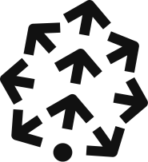
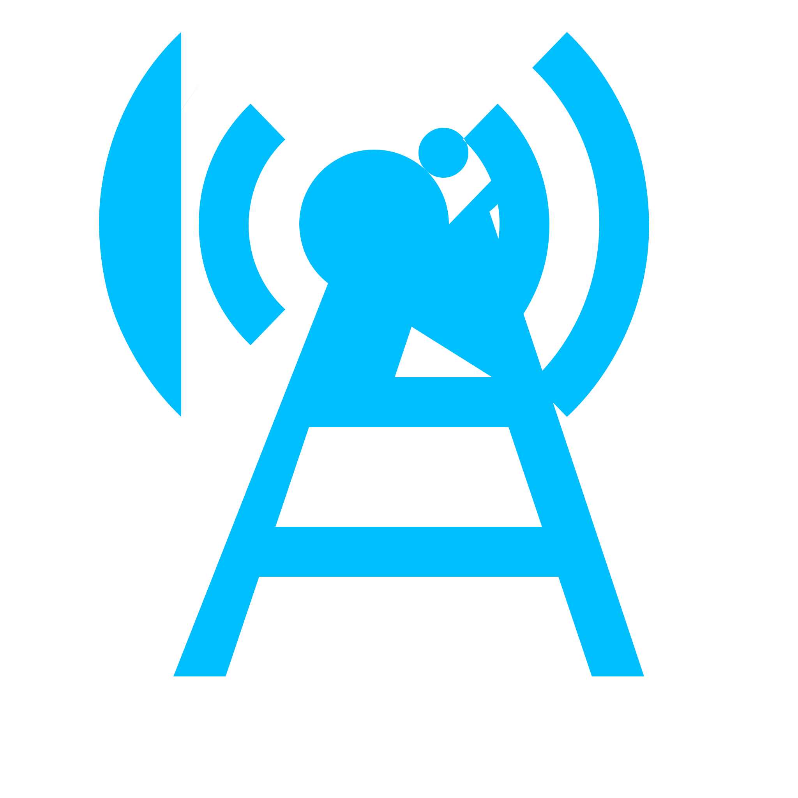
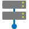
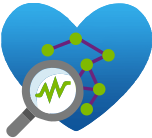
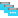
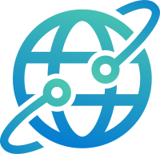

| Application Insights | microsoft.insights/components | | |
| Azure Monitor Private Link Scope | Microsoft.Insights/privateLinkScopes | | Use Azure Monitor Private Link Scopes to privately connect your service to your Application Insights component or Log Analytics workspace. |
| Availability test | microsoft.insights/webtests | | |
| Azure Workbook | microsoft.insights/workbooks | workbooks, notebooks, workspace, solutions, workbook templates, templates | Azure Monitor Workbooks is a canvas for data analysis or reporting in the Azure Portal |
| Azure Workbook Template | microsoft.insights/workbooktemplates | workbooks, notebooks, workspace, solutions, workbook templates, templates | Azure Monitor Workbooks is a canvas for data analysis or reporting in the Azure Portal |
| Azure Spring Apps | Microsoft.AppPlatform/Spring | | |
| Redis Enterprise database | Microsoft.Cache/RedisEnterprise/Databases | | |
| Azure Cache for Redis | Microsoft.Cache/Redis | | An in-memory data store that improves the performance and scalability of an application that uses backend data stores heavily. Redis brings a critical low-latency and high-throughput data storage solution to modern applications. |
 | Azure DevOps organization | | | |
| Azure DevOps organization | microsoft.visualstudio/account | | |
 | Astro Organization | Astronomer.Astro/organizations | Airflow, ETL, ELT, Orchestration, Data pipelines, Data integration, Data processing, Authoring, Job scheduling, workflow scheduler, Data engineering, machine learning, MLOps, AI development, Data lineage, Data analytics, Business intelligence | This SaaS offering allows you to manage your Astro resource as an integrated native service on Azure. You can easily create an Astro organization, login securely via OpenID Single-Sign On, and run and manage as many Airflow deployments as you need. The usage billing will be streamlined alongside other Azure usages via Azure marketplace. |
| Confluent organization | Microsoft.Confluent/organizations | Apache Kafka services,Data Pipeline,Data Integration,Data Processing,Data in motion,Data streaming,Data streaming solutions,Data integration platforms,Streaming Data,Streaming analytics,Real-time data,Event-Driven Architecture,Event-Driven Processing,Real-time Data Processing,Schema Registry,Kafka Connect,Confluent,Confluent Cloud,Apache Kafka,Apache Flink,Confluent Cloud on Azure ,Managed Kafka from Azure Marketplace,Confluent Cloud at Azure Marketplace,Flink | Create a Confluent organization using Azure Marketplace with Pay as you Go or Commits |
| Datadog | Microsoft.Datadog/monitors | The text observability, monitoring, performance, APM, logs, metrics, traces, security, devops, watch, alerts, diagnose, diagnosis, datadog. | Azure Native ISV Services enable you to easily provision, manage, and tightly integrate independent software vendor (ISV) software and services on Azure. This service is developed and managed by Microsoft and Datadog. Datadog - An Azure Native ISV Service reduces the learning curve to monitor the health and performance of your workloads and provides a streamlined experience for configuring and managing Datadog directly inside the Azure Portal. |
| Dell APEX File Storage, An Azure Native Service | Dell.Storage/filesystems | Filesystem,File System,Files,NFS,SMB,CIFS,S3,File share,unstructured data | Sample Product Description |
| Dynatrace | Dynatrace.Observability/monitors | observability, monitor, monitoring, APM, logs, metrics, traces, security, devops, watch, alerts, diagnose, diagnosis | Azure Native ISV Services enable you to easily provision, manage, and tightly integrate independent software vendor (ISV) software and services on Azure. This service is developed and managed by Microsoft and Dynatrace. Azure Native Dynatrace Service is a native integration of Dynatrace with Azure. Dynatrace is a unified observability and security platform designed to help enterprises monitor and optimize dynamic hybrid cloud environments at scale. It leverages causal AI and automation to provide real-time business analytics which enables teams to deliver flawless and secure digital interactions, simplify complexity and accelerate innovation. |
| Elastic | Microsoft.Elastic/monitors | search, logs, observability, monitoring, APM, metrics, traces, security, devops, diagnosis, search software, web crawling, image search, AI search engine, vector search, vector database, natural language processing, ML search, named entity recognition, retrieval augmented generation, observability software, log analytics, APM software, Cloud monitoring, kubernetes monitoring, log monitoring, opentelemetry, log analytics, tool consolidation, aiops, SIEM, security analytics, endpoint security, cloud security, EDR, XDR, soar software, cybersecurity, security operations, threat hunting | Create an Elastic resource using Azure Marketplace to help you manage an Elasticsearch cluster and other Elastic products like Kibana or APM Instances, in one place. |
 | Informatica Organization | Informatica.DataManagement/organizations | UX UI design patterns sample extension ibiza consistency | Consistent experiences across Azure enable users to leverage a few well-known and researched design patterns throughout Azure. |
| Logz.io | Microsoft.Logz/monitors | Logz.io, partner integrations, main account, sub account | Integration with Logz.io enables our customers to send all the logs for non compute resources to Logz.io without having to configure event hubs or enable diagnostic settings. Creating the main account and providing SSO allows user to dynamically include/ exclude tags and SSO into their Logz.io account hassle free. |
 | Logz sub account | Microsoft.Logz/monitors/accounts | Logz.io, partner integrations, main account, sub account | A sub account is a child entity which can be created only under a main account resource. |
| New Relic | NewRelic.Observability/monitors | monitoring,performance,APM,logs,metrics,traces,security,devops,alerts,diagnosis | Create a New Relic resource using Azure Marketplace. |
| Azure Native ArizeAi Cloud Service | ArizeAi.ObservabilityEval/organizations | | |
| Azure Native LambdaTest Cloud Service | LambdaTest.HyperExecute/organizations | | |
|  | Azure Native Pinecone Cloud Service | Pinecone.VectorDb/organizations | | |
| Astro Resource | Providers.Test/statefulIbizaEngines3 | | |
| Solarwinds Resource | Providers.Test/statefulIbizaEngines2 | | |
| Azure Native WeightsAndBiases Cloud Service | Microsoft.WeightsAndBiases/instances | | |
| Neon Serverless Postgres Organization | Neon.Postgres/organizations | Neon, Database, Postgres, Postgresql, Sql, Serverless, Vector, Pgvector, Rag | Neon is a cloud-native Postgres solution designed for modern applications. It offers a serverless, fully managed, and scalable Postgres database with advanced features like automatic scaling, high availability, and robust security. |
| NGINXaaS | NGINX.NGINXPLUS/nginxDeployments | nginx,nginx as a service,load balancer,loadbalancer,reverse proxy,reverseproxy,API Gateway,APIGateway | Fully managed NGINX service on Azure provides the capabilities of a load balancer and reverse proxy to deliver your content at scale, secure! |
| Cloud NGFW by Palo Alto Networks | PaloAltoNetworks.Cloudngfw/firewalls | | |
| Global Rulestack | PaloAltoNetworks.Cloudngfw/globalRulestacks | | |
| Local Rulestack for Cloud NGFW by Palo Alto Networks | PaloAltoNetworks.Cloudngfw/localRulestacks | | |
| PureStorage.Block storage pools avs storage container | purestorage.block/storagepools/avsstoragecontainers | | |
| Azure Native Pure Storage Cloud Service | purestorage.block/reservations | | Pure Storage Cloud provides secure, efficient, and reliable block storage as a native managed service - developed and managed by Microsoft and Pure Storage. |
| Storage pool | purestorage.block/storagepools | | |
| Azure Native Qumulo Scalable File Service | Qumulo.Storage/fileSystems | Filesystem,File System,Files,NFS,SMB,CIFS,S3,File share,unstructured data,NAS | Azure Native Qumulo Scalable File Service is developed and managed by Microsoft and Qumulo. The service enables you to easily provision, manage, and tightly integrate Qumulo file systems on Azure. Qumulo provides high performance enterprise class file systems with the scale, elasticity, and economics of object storage. Dynamically scale capacity and throughput up or down as needed, while paying only for what you use. |
| Sample Partner Resource | Microsoft.SamplePartner/organizations | UX UI design patterns sample extension ibiza consistency | Consistent experiences across Azure enable users to leverage a few well-known and researched design patterns throughout Azure. |
| SolarWinds Observability | SolarWinds.Observability/Organizations | UX UI design patterns sample extension ibiza consistency | Consistent experiences across Azure enable users to leverage a few well-known and researched design patterns throughout Azure. |
| Split Experimentation Workspace (preview) | SplitIO.Experimentation/experimentationWorkspaces | split, splitio, app config, experimentation, abtesting, a/b testing | Split Experimentation workspace is the Azure resource that supports running Experiments in Azure. |
| Resource Explorer | | | |
| Resource Graph query | Microsoft.resourcegraph/queries | shared queries ARG | |
| Resource | | | |
| Recent | | | |
 | Resource Graph Explorer | | arg, query, resources | Resource Graph Explorer lets you craft and run queries against Azure Resource Graph which is an Azure service designed to extend Azure Resource Management by providing efficient and performant resource exploration with the ability to query at scale across a given set of subscriptions so that you can effectively govern your environment. |
| Shared dashboard | Microsoft.Portal/dashboards | | |
| Private dashboard | microsoft.portal/virtual-privatedashboards | | |
 | Deployment | | | |
| Resource group | Microsoft.Resources/subscriptions/resourceGroups | | Resource groups provide a logical container to manage and organize Azure resources, simplifying administration and enabling efficient resource management. |
| Tag | | | |
| Azure AD B2C | | | |
| Guest Usage | Microsoft.AzureActiveDirectory/guestUsages | | |
| External Configuration Tenant | Microsoft.AzureActiveDirectory/ciamDirectories | | |
| B2C Tenant | Microsoft.AzureActiveDirectory/b2cDirectories | | |
| Microsoft Entra Conditional Access | | Conditional Access,Security | |
| Microsoft Entra Authentication Strengths | | Authentication Strengths,Microsoft Entra Authentication Strengths,Microsoft Entra Auth Strengths,Auth Strengths,Azure AD Authentication Strengths,Azure AD Auth Strengths | |
| Microsoft Entra Named locations | | Named locations,Trusted networks,Trusted IPs,Named networks | |
| Microsoft Entra Password protection | | Banned passwords,Password protection,Lockout threshold,Lockout settings,Smart Lockout | |
| Cross-tenant Synchronization | | t2t | |
| Verified ID | | UX UI design patterns sample extension ibiza consistency | Verifiable Credentials are digitally secure documents you issue to your members, employees, or customers. They help users authenticate and authorize themselves when logging in and accessing services. Use Azure to configure, design, and issue W3C standards-based Verifiable Credentials that can be used anywhere. |
| Microsoft Entra Domain Services | Microsoft.AAD/domainServices | | |
| Identity Governance | | access reviews,ToU,Terms of use,Entitlement management,PIM,Privileged Identity Management,IGA | |
| App proxy | | application | |
| Enterprise application | | service principal, service principals, service account, service accounts | |
| Administrative units | | AU | |
| Microsoft Entra roles and administrators | | ME-ID,AAD | |
| Microsoft Entra ID | | Microsoft Entra ID,ME-ID,Azure AD,AAD,AD,MFA,Authentication,Azure Active Directory | |
| External Identities | | user flows,custom user attributes,all identity providers,API connectors,organizational relationships | |
| Create custom Microsoft Entra roles | | new,ME-ID,AAD | |
 | Microsoft Entra Connect | | azure | |
| User settings | | | |
| Tenant properties | | directory | |
| Groups | | | |
| Private Link for Microsoft Entra ID | microsoft.aadiam/privateLinkForAzureAD | | |
| Microsoft Entra authentication methods | | Authentication methods,MFA,Password,Credentials,Multi-factor Authentication,Passwordless,Authenticator,Passkey | |
 | Microsoft Entra ID Protection | | Identity Protection,Security Overview,Risky users,Risky sign-ins,Risk detections | |
| Multifactor authentication | | MFA,Multi-factor Authentication,Authenticator,MFA server | |
| Microsoft Entra password protection | | Banned passwords,Password protection,Lockout threshold,Lockout settings,Smart Lockout | |
| Microsoft Entra ID risk detections | | Risk detections,Risk events,Signals,Detections | |
| Microsoft Entra ID risky workload identities | | Risky service principals,Service principals flagged for risk,Compromised service principals | |
| Microsoft Entra ID risky sign-ins | | Risky sign-ins,Compromised sign-ins | |
| Microsoft Entra ID risky users | | Risky users,Users flagged for risk,Compromised users | |
| Microsoft Entra Identity Secure Score | | Identity Secure Score,Secure Score | |
| Security | | Microsoft Entra ID,azure active directory,azure ad,overview | |
| Microsoft Entra ID Security | | Security,Microsoft Entra ID Security,Identity Security,Identity | |
| Microsoft Entra Connect | | microsoft, entra, connect, provisioning | |
| Account Lockout | | account, lockout | |
| Auth Method | | auth, method, methods, authentication, passkey | |
| Administrator Policy | | admin, policy, administrator, policies, password, reset | |
| App Launchers Setting | | app, launcher, launchers, setting, settings | |
| Microsoft Entra Application Activity | | application, activity, activities, app | |
| Application Credential Activity | | application, activity, activities, credential, app | |
| Admin Consent Request | | admin, consent, request, requests, administrator, application, applications | |
| Privileged Identity Management Browse | | privileged, identity, management, browse, pim | |
 | Audit Log | | audit, events, logs | |
| Activity Report | | activity, activities, report, reports, auth, authentication | |
| Authentication Context | | authentication, context, contexts, conditional, access, auth | |
| Authentication Methods Activity | | authentication, auth, method, methods, activity, activites | |
| Authentication Methods Setting | | authentication, auth, methods, method, settings, setting | |
 | Authentication Strength | | authentication, strengths, strength, conditional, access, auth | |
| Microsoft Defender for Cloud | | microsoft, defender, cloud, subscription, security | |
| BitLocker Key | | encryption, device, bitlocker, keys, recovery | |
| Block/Unblock User | | block, unblock, user, users | |
| Remote Network | | remote, network | |
| Bulk Operation | | bulk, ops, operations, processor, async | |
| Caching Rule | | caching, cache, rules, rule, multifactor, auth, authentication, mfa | |
| Credentials | | credentials, decentralized, identity | |
| Catalog | | catalog, catalogs, elm, admin, elmadmin, management, entitlement | |
| Certificate Authority | | certificate, authorities, authority, certificates, cert | |
| Policy | | conditional, access, policy, policies | |
| Client | | client, clients, network, access | |
| Company Branding | | company, branding | |
| Admin Consent Setting | | admin, consent, settings, setting | |
| Permission classification | | permission, classification, classifications, consent, policies | |
| User Consent Setting | | user, users, consent, setting, settings, permission, permissions | |
| Cross-tenant Access Setting | | cross-tenant, access, settings, xtap | |
| Cross-Tenant Synchronization Configuration | | connect, provisioning, configuration, configurations, sync, synchronization, cross, tenant, cross-tenant | |
| Cross-Tenant Synchronization Overview | | cross-tenant, synchronization, overview, sync, connect, provisioning | |
| Custom Attribute | | custom, attributes, sets, catalog | |
| Custom Attribute | | custom, security, attributes | |
| Custom Control | | conditional, access, custom, control, controls | |
| Welcome to Identity Governance | | welcome, identity, governance, dashboard | |
| Delegated Admin Partner | | delegated, admin, partners, relationships | |
| Deleted Group | | deleted, groups | |
| Deleted User | | deleted, users | |
| Deleted Workflow | | deleted, workflow, lifecycle, manage, management | |
| Devices Overview | | devices, overview | |
| Device Settings | | device, settings, devices, setting | |
 | All Devices | | all, devices | |
| Device Overview | | device, overview, devices | |
| Diagnose and Solve Problem | | diagnose, solve, problems, problem, dxp | |
| Diagnostic Settings | | diagnostic, settings, setting, log, logs, monitor, monitoring | |
| Group Expiration | | group, groups, expiration | |
| Group Naming Policy | | group, groups, naming, policy, policies | |
| Domain Name | | custom, domain, names | |
| Enriched Microsoft 365 Logs | | enriched, microsoft, 365, logs | |
 | Enterprise Applications Collection | | enterprise, applications, collection, app, apps, application, collections | |
| Enterprise Applications User Setting | | user, users, settings, setting, enterprise, application, applications | |
| Enterprise Application Overview | | enterprise, application, applications, app, apps, overview | |
| External Collaboration Setting | | external, collaboration, settings, allowlist, policy | |
| External Identity Getting Started | | external, identity, identities, getting, started | |
| Policy Profile | | policy, profiles, profile | |
| Traffic Forwarding | | traffic, forwarding | |
 | Fraud Alert | | fraud, alert, alerts | |
| Get started with Global Secure Access | | get, started, global, secure, access | |
| Multifactor Authentication Getting Started | | multifactor, mfa, authentication, auth, getting, started | |
| Group Setting | | groups, general, settings | |
| OATH Token | | oath, token, tokens, users, risk, detected, alert, alerts, user | |
| Identity Protection Overview | | identity, protection, overview, id | |
| Identity Secure Score | | identity, secure, score | |
| Users At Risk Detected Alert | | users, user, risk, detected, alerts, alert | |
| Weekly Digest | | users, risk, detected, alert, alerts, user, weekly, digest | |
| Identity Protection Documentation | | identity, protection, documentation, tutorial | |
| Verified ID Settings | | verified, id, setting, settings, decentralized, identity | |
| License | | licenses, billing, trial | |
 | Linked Subscription | | linked, subscriptions, subscription | |
| Local Administrator Password Recovery | | device, local, administrator, password, recovery, devices | |
| Logging with Global Secure Access | | logging, global, secure, access | |
| Multifactor Authentication Registration Policy | | multifactor, authentication, registration, policies, auth, policy, mfa | |
| Mobility (MDM and WIP) | | mobility, mdm, wip, management, devices | |
| Named Location | | conditional, access, named, locations, location | |
| New Support Request | | new, support, request, troubleshoot, troubleshooting, requests | |
| Notification | | notifications, notification | |
| One-time Bypass | | one-time, bypass, multifactor, authentication, mfa | |
| Password Reset On-premises Integration | | password, reset, on-premises, onpremise, on-premise, onpremises, integration | |
| Lifecycle Management Overview | | lifecycle, manage, management, overview | |
| Connected Organization | | connected, organizations, organization, elm, admin, elmadmin, management, entitlement | |
| Password Protection | | conditional, access, password, protection | |
| Password Reset | | password, reset | |
| Helpdesk Link Customization | | customization, customizations, helpdesk | |
| Password Resets Notification | | notifications, notification, password, reset, resets | |
| Users Registration | | user, users, registration, registrations | |
 | Phone Call Setting | | phone, call, settings, setting | |
| Welcome to Permissions Management | | welcome, permissions, management, dashboard, pm | |
| Policy | | conditional, access, policy, policies | |
| Policies Overview | | conditional, access, policies, overview, policy | |
| Feature Preview | | feature, previews, hub | |
| Multifactor Aunthentication Provider | | multifactor, auth, aunthentication, aunthenticator, provider, providers, mfa | |
| Provisioning Logs | | provisioning, logs, connect | |
| Microsoft Entra Connect Get Started | | get, started, connect, provisioning | |
| Create Quick Access configuration | | create, quick, access, configuration, app, application, proxy, connector, group | |
| Privileged Identity Management Quickstart | | privileged, identity, management, quickstart, pim | |
| Registration and Reset Event | | registration, register, reset, events, event, auth, authentication, method, methods | |
| Registration Campaign | | registration, register, registrations, campaign, authentication, method, methods | |
| Access Review | | access, reviews, review, erm | |
| Enterprise State Roaming | | enterprise, state, roaming | |
| Health | | health, dxp, summary, sla | |
| Session Management | | session, management | |
| Identity Protection Overview | | identity, protection, overview | |
| Security Getting Started | | security, getting, started | |
| Multifactor Authentication Server Setting | | multifactor, auth, authentication, server, settings, setting, mfa | |
| Multifactor Authentication Server Status | | multifactor, authentication, server, status, auth, mfa | |
| Microsoft Entra Application Activity | | application, activity, app | |
| Workflow Settings | | workflow, settings, setting, lifecycle, management | |
| Verified ID Setup | | verified, id, setup, decentralized, identity | |
| Sign-in Log | | login, logon, sign-in, events, logs, signout, logout, logoff | |
| Sign-In Risk Policy | | sign-in, risk, policy | |
| Microsoft Entra ID | | identity, overview, entra id, entra, aad, azure ad, azure active directory, directory, active directory, IAM, access management | |
| Conditional Access Terms Of Use | | conditional, access, terms, use, erm | |
| Traffic Logs | | traffic, logs | |
| User Registration Detail | | user, users, registration, details, detail, auth, authentication, method, methods | |
| Resource Assignments for a User | | resource, assignments, user, assignments, elm, admin, elmadmin, management, entitlement | |
| User Risk Policy | | identity, protection, user, users, risk, policy, policies | |
| VPN Connectivity | | conditional, access, VPN, connectivity | |
| Web Filtering Policy | | web, filtering, policy | |
| Workbook | | workbook, workbooks | |
| Workflow | | workflow, workflows, lifecycle, management | |
| Workload Identity | | workload, identity, identities | |
| Users | | | |
| App registration | | service account, service accounts, app registration, app registrations | |
| EngageHub Portal | | | |
| Azure Stack | Preview | Microsoft.AzureStackHCI/edgeNodePools | Azure Stack | Azure Stack |
| Azure Stack HCI | | Azure Stack HCI | Azure Stack HCI |
| Azure Stack HCI Gallery image | Microsoft.AzureStackHCI/galleryImages | Azure Stack HCI Gallery Images | Azure Stack HCI Gallery Images |
| Azure Stack HCI Logical network | Microsoft.AzureStackHCI/logicalnetworks | Azure Stack HCI Logical Networks | Azure Stack HCI Logical Networks |
| Azure Stack HCI Marketplace Gallery image | Microsoft.AzureStackHCI/marketplacegalleryImages | Azure Stack HCI Marketplace Gallery Images | Azure Stack HCI Marketplace Gallery Images |
| Azure Stack HCI VM Network Interface | Microsoft.AzureStackHCI/NetworkInterfaces | Azure Stack HCI Network Interfaces | Azure Stack HCI Network Interfaces |
 | Azure Stack HCI | Microsoft.AzureStackHCI/clusters | Azure Stack HCI | Azure Stack HCI |
| Azure Stack HCI Storage path | Microsoft.AzureStackHCI/storagecontainers | Azure Stack HCI Storage Paths | Azure Stack HCI Storage Paths |
| Azure Stack HCI Virtual Machine - Azure Arc | Microsoft.All/hciVirtualMachines | | |
| Edge Center | | Edge Center | Edge Center |
| AszLabHardware Lab Server | private.aszlabhardware/labservers | | |
| AszLabHardware Reservation | private.aszlabhardware/reservations | | |
| AszLabHardware Server | private.aszlabhardware/servers | | |
| Activity log | | | |
| Microsoft Entra Connect Health | | | |
| Device Update for IoT Hub | Microsoft.DeviceUpdate/Accounts | device update iot hub adu | |
| Front Door and CDN profile | microsoft.cdn/profiles | CDN, Content Delivery Network, AFD, Front door, Frontdoor, Global Load Balancing, DSA | Azure Front Door and CDN profiles is security led, modern cloud CDN that provides static and dynamic content acceleration, global load balancing and enhanced security for your apps, APIs and websites with intelligent threat protection. |
| Azure Data Manager for Agriculture | Microsoft.AgFoodPlatform/farmBeats | UX UI design patterns sample extension ibiza consistency | Consistent experiences across Azure enable users to leverage a few well-known and researched design patterns throughout Azure. |
| Analysis Services | Microsoft.AnalysisServices/servers | | |
| Fabric Capacity | Microsoft.Fabric/capacities | Fabric,Microsoft Fabric,Synapse,Power BI,Power,BI,Microsoft,intelligent,data,platform,Microsoft Intelligent data platform | Microsoft Fabric delivers an end-to-end analytics platform that goes from the data lake to the business user. |
| Verifier Workspace | Microsoft.Network/networkManagers/verifierWorkspaces | network, verifier, workspace, network reachability, reachability intent, analysis run | Azure Virtual Network Manager's verifier workspace enables you to check if your network policies allow or disallow traffic between your Azure network resources. You can create a verifier workspace from your network manager instance. |
| Operator 5G Core | | UX UI design patterns sample extension ibiza consistency | Consistent experiences across Azure enable users to leverage a few well-known and researched design patterns throughout Azure. |
| Attached Data Network | Microsoft.MobileNetwork/packetCoreControlPlanes/packetCoreDataPlanes/attachedDataNetworks | | |
| Packet Core Control Plane | Microsoft.MobileNetwork/packetCoreControlPlanes | | |
| Data Network | Microsoft.MobileNetwork/mobileNetworks/dataNetworks | | |
| Packet Core Data Plane | Microsoft.MobileNetwork/packetCoreControlPlanes/packetCoreDataPlanes | | |
| Mobile Network | Microsoft.MobileNetwork/mobileNetworks | Azure Private 5G Core | Deploy your own Azure Private 5G Core to make services available to your computing resources wherever they may be |
|  | Radio Access Network Insights | Microsoft.MobileNetwork/radioAccessNetworks | | |
| Service | Microsoft.MobileNetwork/mobileNetworks/services | | |
| SIM | Microsoft.MobileNetwork/simGroups/sims | | |
| SIM Group | Microsoft.MobileNetwork/simGroups | | |
| SIM Policy | Microsoft.MobileNetwork/mobileNetworks/simPolicies | | |
| Mobile Network Site | Microsoft.MobileNetwork/mobileNetworks/sites | UX UI design patterns sample extension ibiza consistency | Consistent experiences across Azure enable users to leverage a few well-known and researched design patterns throughout Azure. |
| Slice | Microsoft.MobileNetwork/mobileNetworks/slices | | |
| API Center | Microsoft.ApiCenter/services | | API Center is a structured repository that provides comprehensive information about APIs available within your organization. |
| Gateway | Microsoft.ApiManagement/gateways | | |
| API Management service | Microsoft.ApiManagement/service | | Hybrid and multi-cloud management, observability, and discovery platform for APIs across all environments. |
| Workspace | Microsoft.ApiCenter/services/workspaces | | |
 | App Compliance Automation Tool for Microsoft 365 | | Microsoft 365 App Compliance | App Compliance Automation Tool for Microsoft 365 is an application-centric compliance automation tool that helps you complete Microsoft 365 Certification with greater ease and convenience. |
| Service catalog managed application definition | Microsoft.Solutions/applicationDefinitions | | Create new application definitions that comply with your organization's standards and share them within your organization. |
 | Managed applications center | | Managed application, Service catalog, Service catalog application, Marketplace application, Browse application, Service application, Publish application, Service catalog application definition, Application, Application definition | |
| Managed application | Microsoft.Solutions/applications | | Create applications developed and managed by Azure partners from the Marketplace, or by your organization from your organization's Service Catalog. |
| Visual Studio Online Plan | Microsoft.VSOnline/Plans | | |
| App Protect Policy | Microsoft.AppSecurity/Policies | App, Protect, Policy, Security, WAF, Firewall, Front Door, FrontDoor | App Protect Policies are used to define the security policies (TBD) |
| Azure Arc enabled resource | Microsoft.Arc/all | arc, azurearc, server, onprem, on prem, on-prem, on premise, on-premise, on premises, on-premises, hybrid, non-azure, nonazure, machine, connect, multicloud, management, azure anywhere, arc center, arccenter, arc-center, azure arc | Azure Arc extends Azure management tools to on-premises, multi-cloud environments, and the edge. Start here by adding any of your existing resources. |
 | Azure Arc enabled resource | Microsoft.Arc/allFairfax | arc, azurearc, server, onprem, on prem, on-prem, on premise, on-premise, on premises, on-premises, hybrid, non-azure, nonazure, machine, connect, multicloud, management, azure anywhere, arc center, arccenter, arc-center, azure arc | Azure Arc extends Azure management tools to on-premises, multi-cloud environments, and the edge. Start here by adding any of your existing resources. |
| Azure Arc | | arc, azurearc, server, onprem, on prem, on-prem, on premise, on-premise, on premises, on-premises, hybrid, non-azure, nonazure, machine, connect, multicloud, management, azure anywhere, arc center, arccenter, arc-center, azure arc | Azure Arc simplifies management of complex environments that span clouds, datacenters, and edge devices. |
| Arc Load Balancer | microsoft.kubernetesruntime/loadbalancers | UX UI design patterns sample extension ibiza consistency | Consistent experiences across Azure enable users to leverage a few well-known and researched design patterns throughout Azure. |
| Attestation provider | Microsoft.Attestation/attestationProviders | attestation | Microsoft Azure Attestation is a solution for attesting Trusted Execution Environments (TEEs) such as Intel® Software Guard Extensions (SGX) enclaves and Virtualization-based Security (VBS) enclaves. Attestation is a process of demonstrating that software binaries were properly instantiated on a trusted platform. |
 | Automanage | | automanage, best practices, machine best practices, azure automanage | |
| Automation Account | Microsoft.Automation/AutomationAccounts | automate, runbook, update, patch, manage, inventory, change, track, dsc, powershell, script, workflow, flow, process, serverless, schedule, python, watcher, hybrid | |
| | | | |
 | Guest Assignment | Microsoft.Compute/virtualMachines/providers/guestConfigurationAssignments | guest, assignment | Guest Assignment |
 | Guest Assignment | Microsoft.HybridCompute/machines/providers/guestConfigurationAssignments | guest, assignment | Guest Assignment |
| Azure Update Manager | | azure update manager, update management center, update center, update, patch, patch management, aum, umc, vulnerability management, virtual machines, arc | |
| | | | |
 | App Configuration | Microsoft.AppConfiguration/configurationStores | feature flags, feature flag, AppConfig, config, configuration, App Config | Azure App Configuration lets you centrally manage application configuration and feature flags in the cloud. Create a resource today to be able to manage your configuration as code, propagate changes without having to redeploy, and easily integrate configuration with CI/CD processes. |
 | Compute Fleet | microsoft.azurefleet/fleets | UX UI design patterns sample extension ibiza consistency | Deploy a fleet of mixed-size virtual machines up to 10,000 instances across multiple availability zones. With flexible VM types and sizes, fleet switches seamlessly between VMs based on capacity and cost. |
 | Compute Fleet | microsoft.azurefleet/fleetsComputehub | UX UI design patterns sample extension ibiza consistency | Deploy a fleet of mixed-size virtual machines up to 10,000 instances across multiple availability zones. With flexible VM types and sizes, fleet switches seamlessly between VMs based on capacity and cost. |
| Batch account | Microsoft.Batch/batchAccounts | | |
| Business Continuity Center | | ABC Center, Business Continuity Center, Azure Business Continuity Center, BCDR, Backup, Backup center, Recovery Services vaults, Backup vaults, Protection | |
 | Subscription | microsoft.resources/subscriptions | | |
| Subscription | | | |
| Cost Management + Billing | | cloudyn, recommendations, optimization, optimize | |
| Free service | | free account, free tier, tier, account, free services, services, free virtual machine, free vm, free database, free storage, free blob, free file, free disk, free managed disk, free bandwidth, free networking | |
| Bot Service | Microsoft.BotService/botServices | | Develop intelligent, enterprise-grade bots that help you enrich the customer experience while maintaining control of your data. Build any type of bot—from a Q&A bot to your own branded virtual assistant—to quickly connect your users to the answers they need. |
| Quotas | | Quota,Quota approval,Quota request,Quota management,Quota increase,Get Quota,Capacity Acquisition,Manage Capacity,Increase Quota,Subscription Limits,Service Limits | Quotas provide the ability to oversee and control resource limits in the Azure environment, ensuring efficient allocation and utilization. |
| Front Door and CDN profiles | microsoft.cdn/profiles | CDN, Content Delivery Network, AFD, Front door, Frontdoor, Global Load Balancing, DSA | |
| Custom domain | microsoft.cdn/profiles/endpoints/customdomains | | |
| Endpoint | microsoft.cdn/profiles/endpoints | | |
| Origin | microsoft.cdn/profiles/endpoints/origins | | |
| Change Analysis | | UX UI design patterns sample extension ibiza consistency | View changes in all resources under selected subscriptions to mitigate and diagnose Azure application issues and to monitor Azure resources. |
| Chaos Experiment | | chaos studio,chaos engineering,experiment,fault injection,reliability,resilience,resiliency,availability,outage,failure,disruption,drill,stress test,disaster,testing,validation,validate | Define faults you want to run and the resources you want to inject faults into using Chaos Studio. |
| Chaos Experiment | microsoft.chaos/experiments | chaos studio,chaos engineering,experiment,fault injection,reliability,resilience,resiliency,availability,outage,failure,disruption,drill,stress test,disaster,testing,validation,validate | Define faults you want to run and the resources you want to inject faults into using Chaos Studio. |
| Chaos Studio | | chaos studio,chaos engineering,experiment,fault injection,reliability,resilience,resiliency,availability,outage,failure,disruption,drill,stress test,disaster,testing,validation,validate | Measure, understand, and build application and service resilience to real-world outages using fault injection. |
| Agent Private Access | microsoft.chaos/privateaccesses | chaos studio,chaos engineering,experiment,fault injection,reliability,resilience,resiliency,availability,outage,failure,disruption,drill,stress test,disaster,testing,validation,validate,agent private access | Create an agent private access resource to enable chaos agent experimentation using private networking. |
| Target Management | | chaos studio,chaos engineering,experiment,fault injection,reliability,resilience,resiliency,availability,outage,failure,disruption,drill,stress test,disaster,testing,validation,validate | Enable resources you want to target using faults in Chaos Studio. |
| Domain Name | | | |
| Disk (classic) | Microsoft.ClassicStorage/storageAccounts/disks | | |
 | OS image (classic) | Microsoft.ClassicStorage/storageAccounts/osimages | | |
| VM image (classic) | Microsoft.ClassicStorage/storageAccounts/vmimages | | |
| Virtual machine (classic) | Microsoft.ClassicCompute/VirtualMachines | | |
| Transparency log | microsoft.sovereign/transparencylogs | transparency,log,jit,just-in-time | Microsoft's commitment to transparency includes providing information about occasions when Microsoft engineers had access to resources in your Azure tenant, usually in response to Support requests. Global Administrators can receive a monthly email listing instances in the previous 90 days when Microsoft engineers utilized temporary Just-in-time authorization to access these resources. |
| Regulated Environment Management | | Microsoft cloud for sovereignty,cloud for sovereignty,landing zone,landing zone configuration,landing zone registration,mcfs,mc4s,policy pack,slz,sovereign,sovereign landing zone,sovereignty,transparency,operational transparency,mcfsov,residency,confidential computing,policy portfolio,Digital Sovereignty,Data Sovereignty,Regulated Industry Cloud Solutions,Data Privacy,Government Data Protection,Azure Data Privacy,Data Policy,Compliance Frameworks,Healthcare,Financial Industry,Government,Public Sector,Regulatory Compliance,Policy Initiatives for Digital Sovereignty,Cloud Policy Management,Azure Policy Initiatives,Cloud Compliance Regulations,Data Sovereignty Policies,rem | Enables public sector customers to build and digitally transform workloads in the Microsoft Cloud while meeting their compliance, security and policy requirements. This gives customers greater control over their data and increased transparency to the operational and governance processes of the cloud. |
| Landing Zone Registration | microsoft.sovereign/landingzoneregistrations | lzr, lz, landing, registrations, landing zone, landing zone registrations | Enables public sector customers to build and digitally transform workloads in the Microsoft Cloud while helping meet their compliance, security and policy requirements. This gives customers greater control over their data and increased transparency to the operational and governance processes of the cloud. |
| Landing Zone Configuration | microsoft.sovereign/landingzoneconfigurations | lzc, lz, landing, configurations, landing zone, landing zone configurations | Enables public sector customers to build and digitally transform workloads in the Microsoft Cloud while helping meet their compliance, security and policy requirements. This gives customers greater control over their data and increased transparency to the operational and governance processes of the cloud. |
| Landing Zone Registration | microsoft.sovereign/landingzoneaccounts/landingzoneregistrations | lzr, lz, landing, registrations, landing zone, landing zone registrations | Enables public sector customers to build and digitally transform workloads in the Microsoft Cloud while helping meet their compliance, security and policy requirements. This gives customers greater control over their data and increased transparency to the operational and governance processes of the cloud. |
| Landing zone accounts | microsoft.sovereign/landingzoneaccounts | Microsoft cloud for sovereignty,cloud for sovereignty,landing zone,landing zone configuration,landing zone registration,mcfs,mc4s,policy pack,slz,sovereign,sovereign landing zone,sovereignty,transparency,operational transparency,mcfsov,residency,confidential computing,policy portfolio | Landing zone accounts are the entry point for configuring, deploying and managing landing zones. |
 | Landing Zone Configuration | microsoft.sovereign/landingzoneaccounts/landingzoneconfigurations | lzc, lz, landing, configurations, landing zone, landing zone configurations | Enables public sector customers to build and digitally transform workloads in the Microsoft Cloud while helping meet their compliance, security and policy requirements. This gives customers greater control over their data and increased transparency to the operational and governance processes of the cloud. |
| Azure Cloud HSM | Microsoft.HardwareSecurityModules/cloudHsmClusters | Cloud,Cloud HSM, HSM, RSA, EC, AES | Azure Cloud HSM provides customer-Cloud, single tenant, highly available HSMs to store and manage your cryptographic keys. |
| Azure Load Testing | Microsoft.LoadTestService/LoadTests | Testing, Azure load testing, Load testing tools, High scale testing, Stress testing, Soak testing, Break point testing, Scalability Testing, Spike Testing, JMeter, Locust, Actionable insights, Performance testing, Resilient applications, URL Testing | Azure Load Testing is a fully managed load testing service that enables developers and testers to generate high-scale load and reveals actionable insights into app performance, scalability, and capacity. |
| Cloud service (classic) | microsoft.classicCompute/domainNames | | Create a cloud service to host your cloud service application. Upload your cloud service package and configuration file to define the operating system and the number of virtual machine instances used to run your application. |
| Cloud service role (classic) | microsoft.classiccompute/domainnames/slots/roles | | |
| Cloud service (extended support) | Microsoft.Compute/cloudServices | cloud services, arm | Create a cloud service to host your cloud service application. Upload your cloud service package and configuration file to define the operating system and the number of virtual machine instances used to run your application. |
| 1ES | | | |
| CloudTest Account | Microsoft.CloudTest/accounts | cloudtest | |
| 1ES Build Cache | Microsoft.CloudTest/buildcaches | cloudtest | |
| 1ES Hosted Pool | Microsoft.CloudTest/hostedpools | cloudtest | |
| 1ES Image | Microsoft.CloudTest/images | cloudtest | |
| CloudTest Pool | Microsoft.CloudTest/pools | cloudtest | |
| Code Optimizations | | performance,traces,profiling,app performance,insights,recommendations | An advanced AI model that helps you identify and resolve performance bottlenecks at the code level in running .NET applications |
| Trusted Signing Account | Microsoft.CodeSigning/codesigningaccounts | UX UI design patterns sample extension ibiza consistency | Trusted Signing is a fully managed end-to-end service for signing. It manages all the keys and certificates through the Certification Authorities that are part of the Microsoft Trusted Root Program and meet WebTrust Certification and the latest industry compliance guidelines. |
| Communication Service | Microsoft.Communication/CommunicationServices | communication, video, voice, call, sms, meeting, phone number, real time communications, webrtc, turn, network traversal, voip, azure, azure communication services, push notifications, push, notifications, real-time communication, real-time | Create a resource to build communication experiences with SMS, voice, video, and chat. |
| Communications Gateway | Microsoft.VoiceServices/CommunicationsGateways | communications,gateway,voice,bridge,operator,teams,calling | Connect Teams to your phone network. |
 | Communications Gateway Test Line | Microsoft.VoiceServices/CommunicationsGateways/TestLines | communications,gateway,voice,bridge,operator,teams,calling,test,line | Test Lines for your Azure Communications Gateway. |
| Community Training | Microsoft.Community/communityTrainings | | Community Training is an Azure offering to allow skilling and provide employment opportunities to people. |
| Availability set | Microsoft.Compute/availabilitySets | | Create an availability set to provide redundancy for your application. Create two or more virtual machines in the availability set to distribute their placement across Azure hardware clusters. |
 | Capacity Reservation Group | Microsoft.Compute/capacityReservationGroups | capacity, reservation | A capacity reservation group is a collection of capacity reservations. A capacity reservation is used to reserve virtual machine capacity in an Azure region. This reservation provides the same SLA guarantee as virtual machines. |
| Capacity Reservation Group | Microsoft.Compute/capacityReservationGroupsComputehub | capacity, reservation | A capacity reservation group is a collection of capacity reservations. A capacity reservation is used to reserve virtual machine capacity in an Azure region. This reservation provides the same SLA guarantee as virtual machines. |
| Host group | Microsoft.Compute/hostgroups | | Azure Dedicated Host is a service that provides physical servers able to host one or more virtual machines assigned to one Azure subscription. Dedicated hosts are the same physical servers used in our data centers, provided instead as a directly accessible hardware resource. A host group is a resource that represents a collection of dedicated hosts. You create a host group in a region and an availability zone, and add hosts to it. You can then place VMs directly into your provisioned hosts in whatever configuration best meets your needs. |
 | Host group | Microsoft.Compute/hostgroupsComputehub | | Azure Dedicated Host is a service that provides physical servers able to host one or more virtual machines assigned to one Azure subscription. Dedicated hosts are the same physical servers used in our data centers, provided instead as a directly accessible hardware resource. A host group is a resource that represents a collection of dedicated hosts. You create a host group in a region and an availability zone, and add hosts to it. You can then place VMs directly into your provisioned hosts in whatever configuration best meets your needs. |
|  | Host | Microsoft.Compute/hostgroups/hosts | | Azure Dedicated Hosts provide physical servers isolated to your organization and workloads that host one or more Azure virtual machines. |
 | Host | | | Azure Dedicated Hosts provide physical servers isolated to your organization and workloads that host one or more Azure virtual machines. |
 | Instance | microsoft.compute/computefleetinstances | | |
| Standby pool | microsoft.compute/standbypoolinstance | | |
| Instance | microsoft.compute/virtualmachineflexinstances | | |
 | Proximity placement group | Microsoft.Compute/ProximityPlacementGroups | proximity, placement, group, location | A proximity placement group is a logical grouping used to make sure that Azure compute resources are physically located close to each other. Proximity placement groups are useful for workloads where low latency is a requirement. |
| Proximity placement group | Microsoft.Compute/ProximityPlacementGroupsComputehub | proximity, placement, group, location | A proximity placement group is a logical grouping used to make sure that Azure compute resources are physically located close to each other. Proximity placement groups are useful for workloads where low latency is a requirement. |
| SSH key | Microsoft.Compute/sshPublicKeys | ssh, key, sshkey | SSH is an encrypted connection protocol that allows secure sign-ins over unsecured connections. SSH keys allow secure connection to virtual machines, without having to use passwords. |
 | Virtual machine | Microsoft.All/virtualMachines | VM, Windows 10, Ubuntu, ec2, Red Hat, Debian, SUSE, CentOS, Windows Server, arc vm, arc, hci vm, azure stack hci vm, azure stack hci, avs vm, azure vmware solution, scvmm, vmware | Create a virtual machine that runs Linux or Windows. Select an image from the marketplace or use your own customized image. |
| Virtual machine | Microsoft.Compute/VirtualMachines | VM, Windows 10, Ubuntu, ec2, Red Hat, Debian, SUSE, CentOS, Windows Server, arc vm, arc, hci vm, azure stack hci vm, azure stack hci, avs vm, azure vmware solution, scvmm, vmware | Create a virtual machine that runs Linux or Windows. Select an image from the marketplace or use your own customized image. |
 | Virtual machine | Microsoft.Compute/VirtualMachineComputehub | VM, Windows 10, Ubuntu, ec2, Red Hat, Debian, SUSE, CentOS, Windows Server, arc vm, arc, hci vm, azure stack hci vm, azure stack hci, avs vm, azure vmware solution, scvmm, vmware | Create a virtual machine that runs Linux or Windows. Select an image from the marketplace or use your own customized image. |
| Virtual machine scale set | Microsoft.Compute/virtualMachineScaleSets | VMSS | Create a virtual machine scale set to deploy and manage a load balanced set of identical Windows or Linux virtual machines. Use autoscale to automatically scale virtual machine resources in and out. |
 | Virtual machine scale set | Microsoft.Compute/virtualMachineScaleSetsComputehub | VMSS | Create a virtual machine scale set to deploy and manage a load balanced set of identical Windows or Linux virtual machines. Use autoscale to automatically scale virtual machine resources in and out. |
| Recommendations | Microsoft.ComputeHub/AdvisorCost | UX UI design patterns sample extension ibiza consistency | Create VMs that scale, optimize cost and performance, and support a mix of sizes, zones, and regions—all easily managed in one place. |
 | Recommendations | Microsoft.ComputeHub/AdvisorOperationalExcellence | UX UI design patterns sample extension ibiza consistency | Create VMs that scale, optimize cost and performance, and support a mix of sizes, zones, and regions—all easily managed in one place. |
 | Recommendations | Microsoft.ComputeHub/AdvisorPerformance | UX UI design patterns sample extension ibiza consistency | Create VMs that scale, optimize cost and performance, and support a mix of sizes, zones, and regions—all easily managed in one place. |
 | Recommendations | Microsoft.ComputeHub/AdvisorReliability | UX UI design patterns sample extension ibiza consistency | Create VMs that scale, optimize cost and performance, and support a mix of sizes, zones, and regions—all easily managed in one place. |
 | Recommendations | Microsoft.ComputeHub/AdvisorSecurity | UX UI design patterns sample extension ibiza consistency | Create VMs that scale, optimize cost and performance, and support a mix of sizes, zones, and regions—all easily managed in one place. |
| All resources | Microsoft.ComputeHub/all | UX UI design patterns sample extension ibiza consistency | Create VMs that scale, optimize cost and performance, and support a mix of sizes, zones, and regions—all easily managed in one place. |
| Backup job | Microsoft.ComputeHub/Backup | UX UI design patterns sample extension ibiza consistency | Create VMs that scale, optimize cost and performance, and support a mix of sizes, zones, and regions—all easily managed in one place. |
| Compute infrastructure | Microsoft.ComputeHub/ComputeHubMain | UX UI design patterns sample extension ibiza consistency | Create VMs that scale, optimize cost and performance, and support a mix of sizes, zones, and regions—all easily managed in one place. |
| Health events | Microsoft.ComputeHub/HealthEvents | UX UI design patterns sample extension ibiza consistency | No resource has availability related health events. |
| Linux OS | Microsoft.ComputeHub/LinuxOSType | UX UI design patterns sample extension ibiza consistency | Create VMs that scale, optimize cost and performance, and support a mix of sizes, zones, and regions—all easily managed in one place. |
| Microsoft defender | Microsoft.ComputeHub/MicrosoftDefenderFreeTrialSubscription | UX UI design patterns sample extension ibiza consistency | Create VMs that scale, optimize cost and performance, and support a mix of sizes, zones, and regions—all easily managed in one place. |
 | Microsoft defender | Microsoft.ComputeHub/MicrosoftDefenderStandardSubscription | UX UI design patterns sample extension ibiza consistency | Create VMs that scale, optimize cost and performance, and support a mix of sizes, zones, and regions—all easily managed in one place. |
| Outages | Microsoft.ComputeHub/Outages | UX UI design patterns sample extension ibiza consistency | Create VMs that scale, optimize cost and performance, and support a mix of sizes, zones, and regions—all easily managed in one place. |
 | Power states | Microsoft.ComputeHub/PowerStateDeallocated | UX UI design patterns sample extension ibiza consistency | Create VMs that scale, optimize cost and performance, and support a mix of sizes, zones, and regions—all easily managed in one place. |
 | Power states | Microsoft.ComputeHub/PowerStateRunning | UX UI design patterns sample extension ibiza consistency | Create VMs that scale, optimize cost and performance, and support a mix of sizes, zones, and regions—all easily managed in one place. |
| Power states | Microsoft.ComputeHub/PowerStateStopped | UX UI design patterns sample extension ibiza consistency | Create VMs that scale, optimize cost and performance, and support a mix of sizes, zones, and regions—all easily managed in one place. |
 | Provisioning states | Microsoft.ComputeHub/ProvisioningStateFailedResources | UX UI design patterns sample extension ibiza consistency | Create VMs that scale, optimize cost and performance, and support a mix of sizes, zones, and regions—all easily managed in one place. |
| Provisioning states | Microsoft.ComputeHub/ProvisioningStateSucceededResources | UX UI design patterns sample extension ibiza consistency | Create VMs that scale, optimize cost and performance, and support a mix of sizes, zones, and regions—all easily managed in one place. |
| Windows OS | Microsoft.ComputeHub/WindowsOSType | UX UI design patterns sample extension ibiza consistency | Create VMs that scale, optimize cost and performance, and support a mix of sizes, zones, and regions—all easily managed in one place. |
| Confidential Ledger | Microsoft.ConfidentialLedger/ledgers | | |
| Managed CCF App | Microsoft.ConfidentialLedger/ManagedCCFs | | |
| Solution Manager | | Solution manager;Solutions manager | |
| Container registry | Microsoft.ContainerRegistry/registries | | Build, store, secure, scan, replicate, and manage container images and artifacts with a fully managed, geo-replicated instance of OCI distribution. Connect across environments, including Azure Kubernetes Service and Azure Red Hat OpenShift, and across Azure services like App Service, Machine Learning, and Batch. |
 | Container registry replication | Microsoft.ContainerRegistry/registries/replications | | |
| Container registry scope map | Microsoft.ContainerRegistry/registries/scopeMaps | | |
| Container registry token | Microsoft.ContainerRegistry/registries/tokens | | |
| Container registry webhook | Microsoft.ContainerRegistry/registries/webhooks | | |
| Azure Red Hat OpenShift cluster | Microsoft.RedHatOpenShift/OpenShiftClusters | aro, kubernetes, k8s, open shift, red hat | Azure Red Hat OpenShift provides highly available, fully managed OpenShift clusters on demand, monitored and operated jointly by Microsoft and Red Hat. |
| Kubernetes fleet manager | microsoft.containerservice/fleets | aks, kubernetes, k8s, fleet, fleets | Kubernetes Fleet Managers enables multi-cluster and at-scale scenarios for Kubernetes Service clusters. To get started, create a Kubernetes Fleet Manager resource. |
| Kubernetes service extension | microsoft.kubernetesconfiguration/extensions | | |
 | Kubernetes service extension | microsoft.containerservice/managedclusters/microsoft.kubernetesconfiguration/extensions | | |
| Kubernetes service | Microsoft.ContainerService/managedClusters | aks, containers, docker, k8s, arc, Managed, connected, serverless, azure kubernetes | Use Azure Kubernetes Service to create and manage Kubernetes clusters. Azure will handle cluster operations, including creating, scaling, and upgrading, freeing up developers to focus on their application. To get started, create a cluster with Azure Kubernetes Service. |
| Container instances | Microsoft.ContainerInstance/containerGroups | ACI, docker, group, kubernetes, k8s, virtual, node, kubelet, serverless | Use Azure Container Instances to create and manage Docker containers in Azure without having to set up virtual machines or manage additional infrastructure. To get started, create a container in Azure Container Instances. |
| Kubernetes - Azure Arc namespace | Microsoft.Kubernetes/connectedClusters/Microsoft.KubernetesConfiguration/namespaces | aks, kubernetes, k8s, arc, namespace, namespaces | |
| Kubernetes namespace | Microsoft.ContainerService/managedClusters/Microsoft.KubernetesConfiguration/namespaces | aks, kubernetes, k8s, arc, namespace, namespaces | |
| GitOps configuration | Microsoft.Kubernetes/connectedClusters/Microsoft.KubernetesConfiguration/fluxConfigurations | | |
 | GitOps configuration | Microsoft.ContainerService/managedClusters/Microsoft.KubernetesConfiguration/fluxConfigurations | | |
| Container storage | Microsoft.ContainerStorage/pools | Container storage | Container storage asset description placeholder |
| Copilot in Azure admin center | | | Microsoft Copilot in Azure is an AI-powered tool to help you do more with Azure. With Microsoft Copilot in Azure, you can gain new insights, discover more benefits of the cloud, and orchestrate across both cloud and edge. |
| Cost exports | | scheduled exports, storage, allocation, Amazon Web Services, amortization, amortized, AWS, chargeback, charges, clouds, connectors, costs, cross cloud, download usage and charges, invoices, markup, marketplace, meters, products, purchases, refunds, reporting, reports, reservations, reserved instances, RIs, services, spending, usage, xcloud, x cloud | |
| Cost Management | | alerts, allocation, Amazon Web Services, amortization, amortized, analytics, analyze, anomalies, AWS, budgets, chargeback, charges, charts, clouds, connectors, costs, cross cloud, explorer, governance, insights, invoices, markup, marketplace, meters, metrics, monitoring, notifications, optimization, optimize, optimizing, products, purchases, refunds, reporting, reports, reservations, reserved instances, RIs, scheduled emails, scheduled exports, services, spending, usage, views, xcloud, x cloud, tag, tags, inheritance | |
 | Cost analysis | | alerts, allocation, Amazon Web Services, amortization, amortized, analytics, analyze, anomalies, AWS, budgets, chargeback, charges, charts, clouds, connectors, costs, cross cloud, download usage and charges, emails, explorer, insights, invoices, markup, marketplace, meters, metrics, monitoring, notifications, optimization, optimize, optimizing, products, purchases, refunds, reporting, reports, reservations, reserved instances, RIs, scheduled emails, scheduled exports, services, spending, usage, views, xcloud, x cloud | |
| Cost alerts | | alerts, Amazon Web Services, anomalies, AWS, budgets, charges, clouds, costs, cross cloud, emails, invoices, markup, marketplace, meters, metrics, monitoring, notifications, optimization, optimize, optimizing, products, purchases, refunds, reporting, reports, reservations, reserved instances, RIs, scheduled emails, scheduled exports, services, spending, usage, views, xcloud, x cloud | |
| Cost Management for AWS | | Amazon Web Services, connectors, alerts, allocation, Amazon Web Services, amortization, amortized, analytics, analyze, anomalies, AWS, budgets, chargeback, charges, charts, clouds, connectors, costs, cross cloud, emails, explorer, governance, insights, invoices, markup, marketplace, meters, metrics, monitoring, notifications, optimization, optimize, optimizing, products, purchases, refunds, reporting, reports, reservations, reserved instances, RIs, scheduled emails, scheduled exports, services, spending, usage, views, xcloud, x cloud | |
| Budgets | | alerts, Amazon Web Services, amortization, amortized, AWS, budgets, charges, clouds, connectors, costs, cross cloud, emails, governance, marketplace, meters, metrics, monitoring, notifications, products, purchases, refunds, reservations, reserved instances, RIs, services, spending, xcloud, x cloud | |
| Deploy a custom template | | Deploy to Azure, template deployments, templates, template, deploy, deployment, ARM template, Azure template, custom deployment | |
| Deployment Stack | | | |
| Extension Deployment | Microsoft.PortalServices/Extensions/Deployments | | |
| Portal Extension | Microsoft.PortalServices/Extensions | | |
| Extension Slot | Microsoft.PortalServices/Extensions/Slots | | |
| Extension Version | Microsoft.PortalServices/Extensions/Versions | | |
| Azure Data Transfer | | ADT azure data transfer cloud security | Utilize Azure Data Transfer to securely transfer data between various environments. |
| Connection | Microsoft.AzureDataTransfer/Connections | ADT azure data transfer cloud security | Utilize Azure Data Transfer to securely transfer data between various environments. |
| Flow | Microsoft.AzureDataTransfer/Connections/Flows | ADT azure data transfer cloud security | Utilize Azure Data Transfer to securely transfer data between various environments. |
| Pipeline | Microsoft.AzureDataTransfer/Pipelines | ADT azure data transfer cloud security | Utilize Azure Data Transfer to securely transfer data between various environments. |
| Azure Lighthouse | Microsoft.ManagedServices/registrationDefinitions | MSP,Managed Service Provider,Managed Services,Service Provider,Customer,Azure Lighthouse,Lighthouse | |
| My customers | | MSP,Managed Service Provider,Managed Services,Service Provider,Customer,Azure Lighthouse,Lighthouse | |
| Service providers | | MSP,Managed Service Provider,Managed Services,Service Provider,Azure Lighthouse,Lighthouse | |
| Azure Managed Grafana | Microsoft.Dashboard/grafana | Azure, Managed, Grafana, Azure Managed Grafana | Run a fully managed instance of Grafana that's automatically connected to your Azure resources. |
| Database watcher | Microsoft.DatabaseWatcher/watchers | database, monitor, azure sql, watcher, dbwatcher, sql monitor | Database watcher is a managed monitoring solution for database services in the Azure SQL family. Create a watcher to monitor your Azure SQL estate in depth and with low latency. |
| Access Connector for Azure Databricks | Microsoft.Databricks/accessConnectors | Databricks Access Connectors | Unity Catalog provides unified governance for all data and AI assets in your Lakehouse. Unity Catalog can be configured to use an Azure managed identity to access storage containers on behalf of Unity Catalog users. Managed identities provide an identity for applications to use when they connect to resources that support Microsoft Entra ID authentication. |
| Azure Databricks Service | Microsoft.Databricks/workspaces | Databrick,Databricks,Data Bricks,Spark,AzureSpark,Apache Spark,ML,MLib,Graphx,Fast Spark,Azure Spark,Streaming,Real-time,Real time,SparkBI | Unlock insights from all your data and build artificial intelligence (AI) solutions with Azure Databricks, set up your Apache Spark environment in minutes, autoscale, and collaborate on shared projects in an interactive workspace. |
| Project CI | Microsoft.DataCollaboration/workspaces | Share | Share data simply and safely from multiple sources with other organizations. Easily control what you share, who receives your data, and the terms of use. Project CI provides full visibility into your data sharing relationships with a user-friendly interface. Share data in just a few clicks, or build your own application using REST APIs. |
 | Project CI Invitation | | | |
| Activity | | | |
| Table | | | |
| Data factory | Microsoft.DataFactory/dataFactories | | |
| Data factory (V2) | Microsoft.DataFactory/factories | | |
| Pipeline | | | |
| Slice | | | |
| Data Lake Analytics | Microsoft.DataLakeAnalytics/accounts | | |
| Data Lake Storage Gen1 | Microsoft.DataLakeStore/accounts | | |
| Backup center | | Backup, Restore, Virtual machine backup, Recovery Services Vaults, VM backup, BCDR, Protection | |
| Backup vault | Microsoft.DataProtection/BackupVaults | Backup, Restore, Virtual machine backup, Recovery Services Vaults, VM backup, BCDR, Protection | Data protection strategy keeps your business running when unexpected events occur. Get started by creating a Backup vault. |
| Resource Guard | Microsoft.DataProtection/resourceGuards | Resource, Guard, Backup, Recovery, Restore, Multi-user, Authorization, MUA | Resource Guard lets you secure critical operations on Recovery Services vaults associated with it, giving you enhanced protection against data loss. Get started by creating a Resource Guard. |
| Data Share | Microsoft.DataShare/accounts | Share | Share data simply and safely from multiple sources with other organizations. Easily control what you share, who receives your data, and the terms of use. Data Share provides full visibility into your data sharing relationships with a user-friendly interface. Share data in just a few clicks, or build your own application using REST APIs. |
| Data Share Invitation | | | |
| ClusterStor | Microsoft.ClusterStor/nodes | UX UI design patterns sample extension ibiza consistency | Consistent experiences across Azure enable users to leverage a few well-known and researched design patterns throughout Azure. |
| Cray Server | Microsoft.BareMetal/crayServers | UX UI design patterns sample extension ibiza consistency | Consistent experiences across Azure enable users to leverage a few well-known and researched design patterns throughout Azure. |
| Monitoring Server | Microsoft.BareMetal/monitoringServers | UX UI design patterns sample extension ibiza consistency | Consistent experiences across Azure enable users to leverage a few well-known and researched design patterns throughout Azure. |
| Security Detonation Chamber | Microsoft.SecurityDetonation/chambers | Daas, Sonar, Sonar DaaS, Detonation | Consistent experiences across Azure enable users to leverage a few well-known and researched design patterns throughout Azure. |
| Microsoft Code Studio | | Plans,Dev centers,Projects | Streamline development with Microsoft Code Studio. |
| Dev Box definition | Microsoft.DevCenter/devcenters/devboxdefinitions | Microsoft Dev Box,Azure Deployment Environments | Create a dev box definition to provide the configuration details for the dev boxes that are created within dev box pools. |
| Dev center | Microsoft.DevCenter/devcenters | Microsoft Dev Box,Azure Deployment Environments | Create a dev center to centrally manage images, workstation sizes, environment templates, and networks made available to your development teams. |
| Microsoft Dev Box | | Dev centers,Projects,Network connections | Streamline development with secure, ready-to-code workstations in the cloud. |
| Azure Deployment Environment | | Dev centers,Projects | Enable your team to quickly spin up app infrastructure with project-based templates. |
| Network connection | Microsoft.DevCenter/networkconnections | Microsoft Dev Box | Create a network connection to enable dev boxes to access your virtual network. |
| Dev center plan | Microsoft.DevCenter/plans | Microsoft Dev Box,Azure Deployment Environments | Create a dev center plan to centrally manage enterprise dev centers and projects. |
| Pool | Microsoft.DevCenter/projects/pools | Microsoft Dev Box,Azure Deployment Environments | Create a dev box pool to allow developers to self-serve developer workstations using pre-approved templates and settings. |
| Project | Microsoft.DevCenter/projects | Microsoft Dev Box,Azure Deployment Environments | Create a project to manage team level settings and empower development teams to self-serve dev boxes and environments. |
| IoT Asset | microsoft.deviceregistry/assets | IoT asset management | An asset is a physical or logical entity that represents a device, machine, system, or process. When you create an asset, it will appear here and can be managed from this table. |
 | IoT Device | microsoft.deviceregistry/devices | IoT device management | Consistent experiences across Azure enable users to leverage a few well-known and researched design patterns throughout Azure. |
| Device Update Active Deployment | Microsoft.DeviceUpdate/updateAccounts/activeDeployments | Azure Device Update, IoT Devices, Device Management | Device Update Active Deployments monitor deployment of updates to your devices. |
| Device Update Agent | Microsoft.DeviceUpdate/updateAccounts/agents | Azure Device Update, IoT Devices, Device Management | Device Update Agents manage deployment of updates to your devices. |
| Device Update Deployment | Microsoft.DeviceUpdate/updateAccounts/deployments | Azure Device Update, IoT Devices, Device Management | Device Update Deployments record deployment of updates to your devices. |
| Device Update Device Class | Microsoft.DeviceUpdate/updateAccounts/deviceClasses | Azure Device Update, IoT Devices, Device Management | Device Update Device Classes identify the best possible update for your devices based on their properties. |
| Device Update | Microsoft.DeviceUpdate/updateAccounts/updates | Azure Device Update, IoT Devices, Device Management | Device Updates represent updates to be deployed to your devices. |
| Device Update Account | Microsoft.DeviceUpdate/updateAccounts | Azure Device Update, IoT Devices, Device Management | Device Update Accounts allow you to manage the deployment of updates to your IoT Devices. |
 | Managed DevOps Pool | Microsoft.DevOpsInfrastructure/pools | DevOps,Dev Centers,Projects | Managed DevOps Pools that meet your team needs. |
| Custom image | | | |
| DevTest Lab | Microsoft.DevTestLab/labs | | |
| Dev Tunnels Domain | microsoft.devtunnels/tunnelplans | | |
 | Azure Digital Twins | Microsoft.DigitalTwins/digitalTwinsInstances | UX UI design patterns sample extension ibiza consistency | Consistent experiences across Azure enable users to leverage a few well-known and researched design patterns throughout Azure. |
| Community image | Microsoft.Compute/locations/communityGalleries/images | | Community images are VM image definitions which are shared publicly with everyone through Azure compute gallery's community gallery feature. |
 | Community image | Microsoft.Compute/locations/communityGalleries/imagesComputehub | | Community images are VM image definitions which are shared publicly with everyone through Azure compute gallery's community gallery feature. |
 | Disk | Microsoft.Compute/disks | | Azure managed disks are block-level storage volumes that are managed by Azure and used with Azure virtual machines. Managed disks are like a physical disk in an on-premises server but, virtualized. |
| Disk | | | Azure managed disks are block-level storage volumes that are managed by Azure and used with Azure virtual machines. Managed disks are like a physical disk in an on-premises server but, virtualized. |
| Disk Access | Microsoft.Compute/diskAccesses | | Disk accesses give you control over the networks that can access data on your managed disks and snapshots. |
 | Disk Encryption Set | Microsoft.Compute/diskEncryptionSets | | Disk encryption sets allow you to manage encryption keys using server-side encryption for managed disks. |
| Disk Encryption Set | | | Disk encryption sets allow you to manage encryption keys using server-side encryption for managed disks. |
| VM application definition | Microsoft.Compute/galleries/applications | | VM application definitions are created within a gallery and carry information about the application and requirements for using it internally. This includes the operating system type for the VM application versions contained within the application definition. |
| VM application version | Microsoft.Compute/galleries/applications/versions | | VM application versions can be deployed to virtual machines and virtual machine scale sets. The application package can be easily replicated to Azure regions around the world and managed through versions. |
 | VM image definition | Microsoft.Compute/galleries/images | vm image definition | VM image definitions are defined within an Azure compute gallery and carry information about the image and requirements for using it. A VM image definition may have one or more VM image versions. |
| VM image definition | Microsoft.Compute/galleries/imagesComputehub | vm image definition | VM image definitions are defined within an Azure compute gallery and carry information about the image and requirements for using it. A VM image definition may have one or more VM image versions. |
| Image | Microsoft.Compute/images | | Managed images can be used to deploy virtual machines and virtual machine scale sets. The image contains a list of managed blobs and metadata necessary for creating virtual machines. |
 | Image | Microsoft.Compute/imagesComputehub | | Managed images can be used to deploy virtual machines and virtual machine scale sets. The image contains a list of managed blobs and metadata necessary for creating virtual machines. |
| Image template | Microsoft.VirtualMachineImages/imageTemplates | image template | Azure image builder simplifies the image customization pipeline. Provide a simple configuration describing your image and the image is built then distributed to a VM image version in Azure compute gallery, a managed image, or a storage blob (VHD) in a storage account. |
 | VM image version | Microsoft.Compute/galleries/images/versions | vm image version | A VM image version can be used to create a VM when using an Azure compute gallery. You can create a VM in any region where the VM image version is replicated. |
| VM image version | | | A VM image version can be used to create a VM when using an Azure compute gallery. You can create a VM in any region where the VM image version is replicated. |
| Restore Point | Microsoft.Compute/restorePointCollections/restorePoints | | Restore points store the VM configuration and point-in-time crash (if the VM is shutdown) or application consistent snapshot for all managed disks attached to an Azure virtual machine. |
| Restore Point Collection | Microsoft.Compute/restorePointCollections | | Restore point collections are the ARM resource which contains the restore points specific to a VM and each restore point contains disk restore points for each included disk. |
| Azure compute gallery | Microsoft.Compute/galleries | shared image gallery sig gallery | Azure compute galleries help you organize your custom managed images, share images with users, and replicate images to multiple regions. |
| Snapshot | Microsoft.Compute/snapshots | | Managed snapshots are a full point-in-time copy of a VM managed disk. Take a snapshot of a managed disk for backup or create a managed disk from the snapshot and attach it to a test virtual machine to troubleshoot. |
| Azure Database Migration Service (classic) | Microsoft.DataMigration/services | | |
| Azure Database Migration Project | Microsoft.DataMigration/services/projects | | |
| Azure Database Migration Service | microsoft.datamigration/sqlmigrationservices | | |
| DNS zone | Microsoft.Network/dnsZones | Public DNS zone | Azure DNS is a hosting service for DNS domains that provides name resolution by using Microsoft Azure infrastructure. By hosting your domains in Azure, you can manage your DNS records by using the same credentials, APIs, tools, and billing as your other Azure services. |
| Traffic Manager profile | Microsoft.Network/trafficmanagerprofiles | | Azure Traffic Manager is a DNS-based traffic load balancer. This service allows you to distribute traffic to your public facing applications across the global Azure regions. Traffic Manager also provides your public endpoints with high availability and quick responsiveness. |
| DNS forwarding ruleset | Microsoft.Network/dnsForwardingRulesets | DNS Private Resolver Forwarding Ruleset | Define conditional forwarding rules for DNS traffic across multiple Azure Private Resolver or Virtual Network instances with Private Resolver Endpoints enabled. |
| DNS private resolver | Microsoft.Network/dnsResolvers | DNS Private Resolver Forwarding Ruleset | Azure DNS private resolver bridges on-premises DNS namespaces with private DNS zones hosted on Azure DNS without the burden of deploying VM-based custom DNS servers. You can resolve DNS queries from on-premises networks and do conditional forwarding to on-premises DNS zones. |
 | DNS Domain List | Microsoft.Network/dnsResolverDomainLists | UX UI design patterns sample extension ibiza consistency | Azure DNS Domain List along with Dns Security policy allows you to monitor outgoing dns requests from a virtual network. |
| DNS Security Policy | Microsoft.Network/dnsResolverPolicies | UX UI design patterns sample extension ibiza consistency | Azure DNS Security Policy provides a set of controls to prevent unintended access to customer data from bad actors. This is done by creating custom DNS traffic rules which can permit or deny traffic and also alerts customers of queries. |
| Azure Cosmos DB account | Microsoft.DocumentDb/databaseAccounts | Document, Database, DocumentDB, NoSQL, MongoDB, Mongo, Cosmos, CosmosDB, DB | Create a globally distributed, multi-model, fully managed database using API of your choice. Or try it for free, up to 20k RU/s, for 30 days with unlimited renewal. |
 | Azure Managed Instance for Apache Cassandra | Microsoft.DocumentDB/cassandraClusters | Document, Database, DocumentDB, Apache, Cassandra, Cluster, Cosmos, CosmosDB, DB, Managed, Instance | Create a Microsoft Azure Managed Instance for Apache Cassandra |
| Azure Cosmos DB for PostgreSQL Cluster | Microsoft.DBforPostgreSQL/serverGroupsv2 | citus,scaleout,scale-out,postgresql,postgres,postgre,open source,oss,database,cluster,cluster,hyperscale,horizontal scaling,sharding,sharded database,relational,Document, Database, DocumentDB, Cosmos, CosmosDB, DB | |
| Azure Cosmos DB for MongoDB (vCore) | Microsoft.DocumentDB/mongoClusters | MongoDB, Mongo, Cosmos, CosmosDB, DB, v-Core, vCore, vector, vector search, vector database | |
 | Reporting & Analytics | | UX UI design patterns sample extension ibiza consistency | Consistent experiences across Azure enable users to leverage a few well-known and researched design patterns throughout Azure. |
 | Microsoft Defender EASM | Microsoft.Easm/workspaces | EASM, attack surface, defender, attack surface management, external attack surface, internet assets, cloud assets, riskiq, digital footprint, attack surface insights | Microsoft Defender External Attack Surface Management (Defender EASM) uses proprietary technology to build a dynamic inventory of your web applications, third-party dependencies, and web infrastructure. We combine that with latest threat research and vulnerability intelligence to give you visibility into your organization's security posture. |
| Microsoft Defender EASM (Preview) | Private.Easm/workspaces | EASM, attack surface, defender, attack surface management, external attack surface, internet assets, cloud assets, riskiq, digital footprint, attack surface insights | Microsoft Defender External Attack Surface Management (Defender EASM) uses proprietary technology to build a dynamic inventory of your web applications, third-party dependencies, and web infrastructure. We combine that with latest threat research and vulnerability intelligence to give you visibility into your organization's security posture. |
| Impact Reporting | | ImpactRP, Impact Reporting | |
| Impact Reporting Connector | microsoft.impact/connectors | | |
 | My Resource | Providers.Test/statefulIbizaEngines | UX UI design patterns sample extension ibiza consistency | Consistent experiences across Azure enable users to leverage a few well-known and researched design patterns throughout Azure. |
| Azure Stack Edge / Data Box Gateway | Microsoft.DataBoxEdge/dataBoxEdgeDevices | | |
 | My Resource | Providers.Test/statefulIbizaEngines | UX UI design patterns sample extension ibiza consistency | Consistent experiences across Azure enable users to leverage a few well-known and researched design patterns throughout Azure. |
| Azure Edge Hardware Center Address | Microsoft.EdgeOrder/addresses | UX UI design patterns sample extension ibiza consistency | Addresses created while ordering hardware through Azure Edge Hardware Center are displayed here. |
| Site Bootstrap Key | microsoft.edgeorder/bootstrapConfigurations | UX UI design patterns sample extension ibiza consistency | You can generate a Site Bootstrap key to start provisioning your devices at your Site. |
 | Azure Edge Hardware Center | Microsoft.EdgeOrder/orderItems | UX UI design patterns sample extension ibiza consistency | Azure Edge Hardware Center lets you explore and order a variety of first party Azure hardware helping you build and run hybrid apps across datacenters, edge locations, remote offices and the cloud. |
| Device | Microsoft.EdgeOrder/virtual_orderItems | UX UI design patterns sample extension ibiza consistency | Follow the secure, low-touch step by step procedure to set up one or thousands of devices. |
| Azure Edge Hardware Center | | UX UI design patterns sample extension ibiza consistency | Azure Edge Hardware Center lets you explore and order a variety of first party Azure hardware helping you build and run hybrid apps across datacenters, edge locations, remote offices and the cloud. |
| Education | | education, educate, student, students, pupil, learn, learning, devtools, classroom, course, university, institution, school, teach, teaching, teacher, teachers, professor, professors, instructor, academic, azure dev tools for teaching, ADT4T, kivuto, onthehub, hub, software, free software, free, office, visio, tools, developer, visual, studio, visual studio | Here you can access learning materials, download free software or use Quickstarts to deploy on Azure with ease. Verify your student status and get access to additional Azure benefits. |
| Elastic SAN | Microsoft.ElasticSan/elasticsans | elastic san storage area network | Create a fully managed cloud-native storage area network solution (SAN) that serves as a powerful storage solution for your workloads. Connect to your resources in the SAN using the industry-standard iSCSI protocol. |
| API Connection | Microsoft.Web/connections | | API Connection allows you to easily connect to hundreds of services from Logic Apps. |
| Logic apps custom connector | Microsoft.Web/customApis | | Create Logic Apps custom connectors for your service. |
| On-premises data gateway | Microsoft.Web/connectionGateways | | The on-premises data gateway acts as a bridge, providing quick and secure data transfer between on-premises data and Power BI, Microsoft Flow, Logic Apps and PowerApps. |
| Integration account | Microsoft.Logic/integrationAccounts | IntegrationAccount, Enterprise Integration, XML, B2B, EDI, X12, AS2, EDIFACT, XSLT, agreement, partner, map, schema | Build enterprise integration and B2B/EDI solutions with Logic Apps. |
| Integration Service Environment | Microsoft.Logic/integrationServiceEnvironments | | Fully isolated and dedicated environment for Logic Apps. Please note that the deployment of ISE can take up to 4 hours to complete. |
| Managed Connector | Microsoft.Logic/integrationServiceEnvironments/managedApis | | |
| Logic app | Microsoft.Logic/workflows | Logic, Logic Apps, LogicApps, Schedule, Workflow, Orchestration, Integrate, Integration | Create workflows leveraging hundreds of connectors and the visual designer. |
| Email Communication Services Domain | Microsoft.Communication/EmailServices/Domains | email communication bulk e-mail | Communication Email Services simplifies the integration of email capabilities to your applications, supporting transactional bookkeeping, simple surveys, and marketing emails. |
| Email Communication Service | Microsoft.Communication/EmailServices | email communication bulk e-mail | Communication Email Services simplifies the integration of email capabilities to your applications, supporting transactional bookkeeping, simple surveys, and marketing emails. |
| Azure Center for Epic solution | | UX UI design patterns sample extension ibiza consistency | Consistent experiences across Azure enable users to leverage a few well-known and researched design patterns throughout Azure. |
| Virtual Instance for Epic solution | Microsoft.Workloads/epicVirtualInstances | UX UI design patterns sample extension ibiza consistency | Consistent experiences across Azure enable users to leverage a few well-known and researched design patterns throughout Azure. |
| Event Grid Channel | Microsoft.EventGrid/partnerNamespaces/channels | | |
| Event Grid Domain | Microsoft.EventGrid/domains | | |
| Event Grid Domain Topic | Microsoft.EventGrid/domains/topics | | |
 | Event Grid Subscriptions | | | |
| Event Grid | | Event Grid, System Topic, Topic, Domain, Partner Topic, Partner Destination, Partner Configuration, Partner Registration, Partner Namespace, Namespace, MQTT, PubSub, Queue, Stream, Push, Pull, IoT, HTTP, event, grid, subscription, system, topic, custom, namespace, domain, partner | Azure Event Grid allows you to easily build applications with event-based architectures. |
| Event Grid Namespace Topic | Microsoft.EventGrid/namespaces/topics | | |
| Event Grid Partner Configuration | Microsoft.EventGrid/partnerConfigurations | | |
| Event Grid Partner Destination | Microsoft.EventGrid/partnerDestinations | | |
| Event Grid Partner Namespace | Microsoft.EventGrid/partnerNamespaces | | |
| Event Grid Partner Registration | Microsoft.EventGrid/partnerRegistrations | | |
| Event Grid Partner Topic | Microsoft.EventGrid/partnerTopics | | |
| Event Grid Namespace | Microsoft.EventGrid/namespaces | | |
| Event Subscription | Microsoft.EventGrid/namespaces/topics/eventSubscriptions | | |
| Event Grid System Topic | Microsoft.EventGrid/systemTopics | | |
| Event Grid Subscriptions | Microsoft.EventGrid/systemTopics/eventSubscriptions | | |
| Event Grid Topic | Microsoft.EventGrid/topics | | |
| Event Grid Topic Space | Microsoft.EventGrid/namespaces/topicSpaces | | |
| Event Hubs Namespace | Microsoft.EventHub/namespaces | Apache Kafka, Kafka, Ingestion, Stream Ingestion, Real-time, Event Streaming, Streaming platform, Data Ingestion, Managed Kafka Ingestion Platform, micro-batch, Capture, EventHubs cluster, Confluent cluster, Data processing | An Event Hubs namespace is a management container for event hubs which provides DNS-integrated network endpoints and a range of access control and network integration management. |
| Event Hubs Cluster | Microsoft.EventHub/clusters | Apache Kafka, Kafka, Ingestion, Stream Ingestion, Real-time, Event Streaming, Streaming platform, Data Ingestion, Managed Kafka Ingestion Platform, micro-batch, Capture, EventHubs cluster, Confluent cluster, Data processing | Event Hubs Dedicated clusters are designed to meet the needs of most demanding mission-critical event streaming workloads. |
| Event Hubs Instance | Microsoft.EventHub/namespaces/eventhubs | | An event hub is a component that facilitates the organization of events within Event Hubs, providing a connection point for publishers and consumers. |
| Schema Group | Microsoft.EventHub/namespaces/schemagroups | | |
| Event Hubs Geo-DR Alias | Microsoft.EventHub/namespaces/disasterrecoveryconfigs | | |
| Experiment Workspace | Microsoft.Experimentation/experimentWorkspaces | UX UI design patterns sample extension ibiza consistency | Consistent experiences across Azure enable users to leverage a few well-known and researched design patterns throughout Azure. |
| Advisor | | Azure, Azure Advisor, Adviser, Recommendations, best practices, installation checks, configuration checks | |
| Azure Data Box | Microsoft.DataBox/jobs | azure data box, box, data, data box, import, export, import/export, import export, import/export jobs, import export jobs | |
| Provisioning policy | Microsoft.FairfieldGardens/ProvisioningResources/ProvisioningPolicies | Provisioning policy, IoT Devices, Device Management | Provisioning policy description. |
| Fairfield Gardens | Microsoft.FairfieldGardens/ProvisioningResources | Fairfield Gardens, IoT Devices, Device Management | Fairfield Gardens Service is a helper service that enables zero-touch, just-in-time provisioning of devices to the right endpoint without requiring human intervention, allowing customers to provision millions of devices in a secure and scalable manner. In addition, customers can also choose to issue and manage short-lived X.509 certificates for their devices, thereby increasing the security posture of their solution. |
| File share | Microsoft.FileShares/fileshares | File share | Azure Files offers fully managed file shares in the cloud that are accessible via the industry standard Network File System (NFS) protocol, and Azure Files REST API. |
| Microsoft Firmware Analysis | | | |
| Fluid Relay | Microsoft.FluidRelay/fluidRelayServers | FRS Fluid Relay | The Fluid Relay service is a managed cloud-based service for the Fluid Framework. |
| Front Door and CDN profiles | Microsoft.Network/frontdoors | Frontdoor, Front Door,Front Door and CDN profiles, Load balancer, Network, AFD, CDN, Azure Front Door Service, Content Delivery Network, acceleration, DDoS, Protection | Azure Front Door Service is Microsoft's highly available and scalable web application acceleration platform and global HTTP(s) load balancer. It provides built-in DDoS protection and application layer security and caching. Front Door enables you to build applications that maximize and automate high-availability and performance for your end-users. Use Front Door with Azure services including Web/Mobile Apps, Cloud Services and Virtual Machines – or combine it with on-premises services for hybrid deployments and smooth cloud migration. |
| Global view | | | |
| Microsoft Graph Data Connect | | mgdc graph data connect | Create and manage applications to access rich M365 data in bulk into your Azure subscription with granular control for consent. |
| Billing access control (IAM) | | billing access, billing control, billing iam | |
| Billing subscription | | billing, subscription, product | |
 | Invoice | | bill, charge, cost, invoice, spending, usage | |
| Cost Management + Billing | | cloudyn, recommendations, alerts, allocation, Amazon Web Services, amortization, amortized, analytics, analyze, AWS, bill, billing, budgets, chargeback, charges, charts, clouds, connectors, costs, credit card, cross cloud, explorer, insights, invoices, load balance, make a payment, markup, marketplace, meters, metrics, monitoring, optimization, optimize, optimizing, pay balance, pay bill, pay invoice, payment, payment method, products, purchases, refunds, reporting, reports, reservations, reserved instances, RIs, services, spending, upi, usage, views, xcloud, x cloud, billing account, billing profile, invoice section | |
| HDInsight cluster | Microsoft.HDInsight/clusters | HDInsight, HDI, hdinsight, hdi, HDInsight cluster, Hadoop, HBase, Spark, Storm, R Server, R, Kafka, Interactive Query, Analytics, Big data, ML server, ML services, Machine Learning Server, 9.3 Server | Create an HDInsight cluster to process massive amounts of data using popular open-source frameworks such as Hadoop, Spark, Hive, LLAP, Kafka, Storm, ML Services, and more. |
| Azure HDInsight on AKS cluster | Microsoft.HDInsight/clusterpools/clusters | HDInsight, HDI, hdinsight, hdi, Azure HDInsight on AKS cluster, Azure HDInsight on AKS, AKS, Kubernetes | Create an Azure HDInsight on AKS cluster to process massive amounts of data using modern and latest open-source frameworks such as Apache Flink, Trino, Apache Spark, and more. |
| Azure HDInsight on AKS cluster pool | Microsoft.HDInsight/clusterpools | HDInsight, HDI, hdinsight, hdi, Azure HDInsight on AKS cluster pool, Azure HDInsight on AKS, AKS, Kubernetes | Create an Azure HDInsight on AKS cluster pool to organize your HDInsight on AKS clusters. You can have multiple clusters in the same cluster pool. |
| Service Health | | Health, Maintenance, Planned Maintenance | |
| Healthcare agent service | Microsoft.HealthBot/healthBots | | |
| De-identification Service | Microsoft.HealthDataAIServices/DeidServices | De-identification, Health Data, PHI, Health | De-identification for Health Data and AI Services is a cloud-based API service that applies machine-learning intelligence to extract and label, redact, or surrogate protected health information (PHI) from a variety of unstructured texts such as doctor's notes, clinical documents, clinical transcripts, and electronic health records. The service performs three key functions which are tag, redact, or surrogate, through synchronous (“real time”) or asynchronous (“batch”) API calls. |
|  | Health Model (preview) | Microsoft.HealthModel/healthmodels | health resiliency resources metrics signals | A health model augments metric and logs with critical business context of a workload, enabling the automated evaluation of quantified health states. |
| Resource bridge | Microsoft.ResourceConnector/Appliances | resource bridge, private cloud | Resource bridge is a packaged virtual machine which has a built-in Kubernetes management cluster, which requries no user management. This virtual appliance helps customers enable VM self-serving on-prem from Azure without the customer creating and managing a Kubernetes cluster from scratch. |
| Azure Arc Kubernetes cluster | Microsoft.Arc/kubernetesResources | | |
 | Azure Arc Kubernetes cluster | Microsoft.Arc/kubernetesResourcesFairfax | | |
| Kubernetes - Azure Arc | Microsoft.Kubernetes/connectedClusters | | |
| Kubernetes - Azure Arc extension | Microsoft.Kubernetes/connectedClusters/Microsoft.KubernetesConfiguration/extensions | aks, kubernetes, k8s, arc, extension, extensions | |
| Kubernetes hybrid - Azure Arc | Microsoft.HybridContainerService/provisionedClusters | | |
| Azure Arc virtual machine | Microsoft.All/arcVirtualMachines | arc, virtual, machine, hybrid, onprem, on prem, on-prem, on premise, on-premise, on premises, on-premises, multicloud | Create an Azure Arc virtual machine that runs on your private cloud. Select an image from the marketplace or use your own customized image. |
 | Virtual machine | Microsoft.All/virtualMachines | virtual,vm,vms,compute,machine,arc,azurearc,hybrid | Create a virtual machine that runs Linux or Windows. Select an image from the marketplace or use your own customized image. |
 | Azure Arc enabled resources | Microsoft.Arc/all | arc, azurearc, server, onprem, on prem, on-prem, on premise, on-premise, on premises, on-premises, hybrid, non-azure, nonazure, machine, connect, multicloud, management, azure anywhere, arc center, arccenter, arc-center, azure arc | Azure Arc extends Azure management tools to on-premises, multi-cloud environments, and the edge. Start here by adding any of your existing resources. |
| Azure Arc enabled resources | Microsoft.Arc/allFairfax | arc, azurearc, server, onprem, on prem, on-prem, on premise, on-premise, on premises, on-premises, hybrid, non-azure, nonazure, machine, connect, multicloud, management, azure anywhere, arc center, arccenter, arc-center, azure arc | Azure Arc extends Azure management tools to on-premises, multi-cloud environments, and the edge. Start here by adding any of your existing resources. |
| Azure Arc | | arc, azurearc, server, onprem, on prem, on-prem, on premise, on-premise, on premises, on-premises, hybrid, non-azure, nonazure, machine, connect, multicloud, management, azure anywhere, arc center, arccenter, arc-center, azure arc | Azure Arc simplifies management of complex environments that span clouds, datacenters, and edge devices. |
| Azure Stack HCI virtual machine - Azure Arc | Microsoft.AzureStackHci/virtualMachines | | |
| Custom location | Microsoft.ExtendedLocation/CustomLocations | custom location, location, region, arc, azurearc, hybrid, nonazure, non-azure, onprem, on prem, on-prem, on premise, on-premise, on premises, on-premises, private | With custom locations you can map your on-premises and other infrastructure environments to Azure. Create and manage virtual machines, operate your infrastructure, and run services like Azure Functions in your own datacenters, all with Azure management tools. |
 | Machine - Azure Arc | Microsoft.HybridCompute/arcServerWithWac | arc, azurearc, hybrid, nonazure, non-azure, onprem, on prem, on-prem, on premise, on-premise, on premises, on-premises, computer, server, machine | Ensure compliance across all your environments by adding your Linux and Windows servers to Azure. Once in Azure, you can leverage Azure management and governance, and view and organize your inventory in one place. |
 | Machine - Azure Arc | Microsoft.HybridCompute/machines | arc, azurearc, hybrid, nonazure, non-azure, onprem, on prem, on-prem, on premise, on-premise, on premises, on-premises, computer, server, machine | Ensure compliance across all your environments by adding your Linux and Windows servers to Azure. Once in Azure, you can leverage Azure management and governance, and view and organize your inventory in one place. |
| Machine - Azure Arc | Microsoft.HybridCompute/machinesSovereign | arc, azurearc, hybrid, nonazure, non-azure, onprem, on prem, on-prem, on premise, on-premise, on premises, on-premises, computer, server, machine | Ensure compliance across all your environments by adding your Linux and Windows servers to Azure. Once in Azure, you can leverage Azure management and governance, and view and organize your inventory in one place. |
| Microsoft.AwsConnector ec2 instance | microsoft.hybridcompute/machines/microsoft.awsconnector/ec2instances | | |
| Multicloud connector | Microsoft.HybridConnectivity/publicCloudConnectors | multicloud, aws | Create an AWS connector to add your AWS assets to Azure. |
| Azure Arc Private Link Scope | Microsoft.HybridCompute/privateLinkScopes | arc, azurearc, private link scope, private, endpoints, connection, network, PLS | Azure Arc Private link scope enables you to access Azure PaaS services and Azure hosted customer owned services over a private endpoint in your virtual network. Use Azure Arc Private link scopes to privately connect your Azure Arc resources. |
| SCVMM virtual machine - Azure Arc | Microsoft.scvmm/virtualMachines | | |
| SCVMM management server | Microsoft.ScVmm/vmmServers | scvmm | Connect your existing SCVMM management server to Azure so you can provision and manage VMs on it through Azure Arc. |
| Arc gateway | Microsoft.HybridCompute/gateways | gateway, arc gateway | If you use enterprise proxies or firewalls to manage outbound traffic from your environment, the Azure Arc gateway allows you to onboard infrastructure to Azure Arc with a significantly reduced list of required endpoints. |
| Machine - Azure Arc | Microsoft.HybridCompute/machinesEsu | arc, azurearc, hybrid, nonazure, non-azure, onprem, on prem, on-prem, on premise, on-premise, on premises, on-premises, computer, server, machine | Enable ESUs on your Windows Server 2012 and 2012 R2 across multi-clouds, on-premise and any environment that are reaching end of support and get access to Extended Security Updates. Add servers through Azure Arc to enable ESUs. |
| Extended Security Updates - Windows Server 2012/R2 | Microsoft.HybridCompute/licenses | Extended Security Updates - Windows Server 2012/R2, esu, esu Windows Server 2012, esu Windows Server 2012/R2, extended security updates, esu license, license | Create and attach an Extended Security Updates (ESUs) license to eligible Arc-enabled machines to continue receiving critical security updates automatically. |
 | Machine - Azure Arc | Microsoft.HybridCompute/machinesPayGo | arc, azurearc, hybrid, nonazure, non-azure, onprem, on prem, on-prem, on premise, on-premise, on premises, on-premises, computer, server, machine | Ensure compliance across all your environments by adding your Linux and Windows servers to Azure. Once in Azure, you can leverage Azure management and governance, and view and organize your inventory in one place. |
 | Machine - Azure Arc | Microsoft.HybridCompute/machinesSoftwareAssurance | arc, azurearc, hybrid, nonazure, non-azure, onprem, on prem, on-prem, on premise, on-premise, on premises, on-premises, computer, server, machine | Ensure compliance across all your environments by adding your Linux and Windows servers to Azure. Once in Azure, you can leverage Azure management and governance, and view and organize your inventory in one place. |
| VMware vCenter | Microsoft.connectedVMwareVSphere/vCenters | vCenter, vSphere, private cloud, hybrid, multicloud | Connect your existing VMware vCenter to Azure so you can provision and manage VMs on it through Azure Arc. |
 | VMware + AVS virtual machine | Microsoft.ConnectedVMwarevSphere/VirtualMachines | | |
| VMware + AVS virtual machine | Microsoft.HybridCompute/Machines/Microsoft.ConnectedVMwarevSphere/virtualMachineInstances | | |
| Azure Arc data controller | Microsoft.AzureArcData/dataControllers | Azure Arc data controller | Create an Azure Arc data controller to enable Azure data services in the Kubernetes environment of your choice. |
| PostgreSQL server – Azure Arc | Microsoft.AzureArcData/postgresInstances | PostgreSQL server – Azure Arc | Create a semi-managed PostgreSQL enabled by Azure Arc on the infrastructure of your choice (on your premises, in the cloud, at the edge), with built-in management capabilities that drastically reduces your management overhead and meets your requirements of data residency and customer control. |
| SQL managed instance - Azure Arc | Microsoft.AzureArcData/sqlManagedInstances | SQL managed instance - Azure Arc | Create a fully managed SQL Managed Instance enabled by Azure Arc on the infrastructure of your choice, with built-in management capabilities that drastically reduce your management overhead. |
| SQL Server ESU license | microsoft.azurearcdata/sqlserveresulicenses | | |
 | SQL Server - Azure Arc | Microsoft.AzureArcData/sqlServerInstances | SQL Server - Azure Arc | SQL Server enabled by Azure Arc allows you to manage your global inventory of SQL servers, protect SQL Server instances with Microsoft Defender for Cloud or periodically assess and tune the health of your SQL Server configurations. |
| SQL Server database - Azure Arc | Microsoft.AzureArcData/SqlServerInstances/Databases | SQL Server databases - Azure Arc | SQL Server databases - Azure Arc allows you to manage your global inventory of SQL servers databases, protect SQL Server databases with Microsoft Defender for Cloud or periodically assess and tune the health of your SQL Server databases configurations. |
| SQL Server License | microsoft.azurearcdata/sqlserverlicenses | | |
| Application Gateway for Containers | Microsoft.ServiceNetworking/trafficControllers | application gateway for containers, AGIC, AGC | Application Gateway for Containers |
| Application gateway | Microsoft.Network/applicationGateways | AppGw, Load balancer (Layer 7/HTTP), SSL offloading, Web application firewall (WAF), L7, Gateway, Application | Azure Application Gateway gives you application-level routing and load balancing services that let you build a scalable and highly-available web front end in Azure. You control the size of the gateway and scale your deployment based on your needs. |
| Bastion | Microsoft.Network/bastionHosts | Network security, Policy, Policies, ASG, NSG | You can use Bastions to configure web based access to your vnet vm. |
| Firewall | Microsoft.Network/azureFirewalls | Security, Protect, Network, Firewall | Cloud-native network security to protect your Azure Virtual Network resources |
| Connection | Microsoft.Network/connections | VPN, ExpressRoute, ER | Create a secure connection to your virtual network by using VPN Gateway or ExpressRoute. |
 | ExpressRoute circuit | Microsoft.Network/expressRouteCircuits | VPN, co-location, colo, connectivity, ER | Use ExpressRoute to set up a fast, private connection to Microsoft cloud services from your on-premises infrastructure or co-location facility. You can create a connection between your on-premises network and the Microsoft cloud in three different ways, CloudExchange Co-location, Point-to-point Ethernet Connection, and Any-to-any (IPVPN) Connection. Connectivity providers can offer one or more connectivity models. You can work with your connectivity provider to pick the model that works best for you. |
| ExpressRoute Direct | Microsoft.Network/expressRoutePorts | VPN, co-location, colo, connectivity, ER | ExpressRoute Direct gives you the ability to connect directly into Microsoft's global network at peering location strategically distributed across the world. ExpressRoute Direct provides dual 100 Gbps or 10 Gbps connectivity, which supports Active/Active connectivity at scale |
| Microsoft.Network express route gateways express route connection | Microsoft.Network/expressRouteGateways/expressRouteConnections | | |
| ExpressRoute provider | | | |
| ExpressRoute traffic collector | Microsoft.NetworkFunction/azureTrafficCollectors | VPN, co-location, colo, connectivity, ER | ExpressRoute traffic collector |
| Firewall Manager | | Security, Protect, Network, Firewall, Manager, Firewall Manager | |
| Firewall Policy | Microsoft.Network/firewallPolicies | Security, Protect, Network, Firewall, Firewall Policy | Firewall Policy |
| IP Group | Microsoft.Network/ipGroups | IP, Groups, IP Groups, ip group, ipgroup, groups | Browse IP groups |
| Local network gateway | Microsoft.Network/localnetworkgateways | VPN, LNG, Local, Network, Gateway | Create a local network gateway to represent the on-premises site that you want to connect to a virtual network. The local network gateway specifies the public IP address of the VPN device and IP address ranges located on the on-premises site. Later, create a VPN gateway connection between the virtual network gateway for the virtual network, and the local network gateway for the on-premises site. |
| Mesh VPN | Microsoft.NetworkFunction/meshVpns | | Create a mesh VPN to get started. |
| Route filter | Microsoft.Network/routeFilters | Peering, BGP, ER | When Microsoft peering is configured on your ExpressRoute circuit, the Microsoft edge routers establish a pair of BGP sessions with the edge routers (yours or your connectivity provider's). No routes are advertised to your network. To enable route advertisements to your network, you must associate a route filter. A route filter lets you identify services you want to consume through your ExpressRoute circuit's Microsoft peering. It is essentially a white list of all the BGP community values. Once a route filter resource is defined and attached to an ExpressRoute circuit, all prefixes that map to the BGP community values are advertised to your network. |
| Virtual network gateway | Microsoft.Network/virtualNetworkGateways | VPN, VNG, Virtual, Network, Gateway | Azure VPN Gateway connects your on-premises networks to Azure through Site-to-Site VPNs in a similar way that you set up and connect to a remote branch office. The connectivity is secure and uses the industry-standard protocols Internet Protocol Security (IPsec) and Internet Key Exchange (IKE). |
| Microsoft.Network/virtualHub | Microsoft.Network/virtualHubs | | Create a Route Server to get started. |
| Route Server | | | |
| Azure Cortex | | | |
| Virtual WAN | Microsoft.Network/virtualWans | | Create a virtual WAN to get started. Next, create sites in your virtual WAN and connect them to virtual hubs in your preferred Azure regions. Within your virtual WAN, you can also connect hubs to your existing virtual networks. |
| Microsoft.Network network virtual appliance | microsoft.network/networkvirtualappliances | | |
| Infrastructure as Code Automation | Microsoft.DevHub/iacProfiles | Simple, Consistent, Automation | Simplify how you manage your edge infrastrucutre using industry leading processes and tools. |
| My Resource | Providers.Test/statefulIbizaEngines | UX UI design patterns sample extension ibiza consistency | Consistent experiences across Azure enable users to leverage a few well-known and researched design patterns throughout Azure. |
 | My Resource | Providers.Test/statefulIbizaEngines | UX UI design patterns sample extension ibiza consistency | Consistent experiences across Azure enable users to leverage a few well-known and researched design patterns throughout Azure. |
| IoT Central Application | Microsoft.IoTCentral/IoTApps | | |
| Azure IoT Hub Device Provisioning Service (DPS) | Microsoft.Devices/ProvisioningServices | | Use Azure IoT Hub Device Provisioning Service to automate IoT device provisioning and registration. |
| IoT Hub | Microsoft.Devices/IotHubs | | Create an IoT hub to help you connect, monitor, and manage billions of your IoT assets. |
| Azure IoT Operations | Microsoft.IoTOperations/instances | Azure IoT | Azure IoT Operations is a set of composable services that run on Azure Arc-enabled edge Kubernetes clusters. These services can be deployed and managed together. |
| Microsoft Defender for IoT | | | |
| IP address pool | Microsoft.Network/networkManagers/ipamPools | UX UI design patterns sample extension ibiza consistency | Consistent experiences across Azure enable users to leverage a few well-known and researched design patterns throughout Azure. |
| Storage Sync Service | Microsoft.StorageSync/storageSyncServices | | |
| Certificate | | | |
| Key | | | |
| Key vault | Microsoft.KeyVault/vaults | KV, AKV, Vault, Secrets, Certificates, HSM key, HSM, RSA, ECC certificate, Self Signed Certificate, RSA, EC, P-256, P-384, P-521, P-256K, PKCS #12, PEM | Safeguard cryptographic keys and other secrets used by cloud apps and services. |
| Secret | | | |
| Azure Data Explorer Cluster | Microsoft.Kusto/clusters | kusto,data explorer,big data,adhoc,analytics,telemetry,adx,azure data,dx,kql,time series | Create an Azure Data Explorer cluster to enjoy a big-data, interactive analytics platform that provides ultra-fast telemetry search and advanced text search for any type of data. |
| Azure Data Explorer Database | Microsoft.Kusto/clusters/databases | kusto,data explorer,big data,database | Create an Azure Data Explorer database to store your data. |
| Data Explorer pool (preview) | Microsoft.Synapse/workspaces/kustopools | kusto,data explorer,big data,adhoc,analytics,telemetry,adx,kustopool,synapse,sde,dx,kql,time series | Create a Data Explorer pool to enjoy a big-data, interactive analytics platform that provides ultra-fast telemetry search and advanced text search for any type of data. |
 | Data Explorer Database | Microsoft.Synapse/workspaces/kustopools/databases | kusto,synapse,Data Explorer pool,big data,database | Create a Data Explorer Database to store your data. |
 | Azure Maps Creator Resource | Microsoft.Maps/accounts/creators | Location, Maps, Cartography, Render, Rendering, Route, Routing, Directions, Vehicle, Car, Truck, Navigation, Geospatial, Geography, Geographic, Cartographic, GIS, Traffic, Flow, Incident, Time, Zone, Control, World, Earth, Planet, Search, Business, POI, Address, Landmarks, Geocoding, Reverse, Fuzzy, Geometry, Nearby, Radius, Along, CrossStreet, Batch, Matrix, Calculate, point, circle, location, fastest, shortest, thrilling, eco, tollRoads, motorways, ferries, unpavedRoads, carpools, alreadyUsedRoads, Polyline, taxi, bus, van, motorcycle, bicycle, bike, pedestrian, combustion, electric, hazmat, hazardous, material, explosive, batch, matrix, raster, vector, tile, WMS, WMTS, grid, zoom, segment, Transit, publicTransport, publicTransit, maas, subway, metro, carshare, scooter, Weather, weatherForecast, currentWeather, weatherRadar, weatherSatellite, private maps, private atlas, Creator | Creator allows you to create private maps and map applications using Azure Maps API and SDK. |
 | Azure Maps Account | Microsoft.Maps/accounts | Location, Maps, Cartography, Render, Rendering, Route, Routing, Directions, Vehicle, Car, Truck, Navigation, Geospatial, Geography, Geographic, Cartographic, GIS, Traffic, Flow, Incident, Time, Zone, Control, World, Earth, Planet, Search, Business, POI, Address, Landmarks, Geocoding, Reverse, Fuzzy, Geometry, Nearby, Radius, Along, CrossStreet, Batch, Matrix, Calculate, point, circle, location, fastest, shortest, thrilling, eco, tollRoads, motorways, ferries, unpavedRoads, carpools, alreadyUsedRoads, Polyline, taxi, bus, van, motorcycle, bicycle, bike, pedestrian, combustion, electric, hazmat, hazardous, material, explosive, batch, matrix, raster, vector, tile, WMS, WMTS, grid, zoom, segment, Transit, publicTransport, publicTransit, maas, subway, metro, carshare, scooter, Weather, weatherForecast, currentWeather, weatherRadar, weatherSatellite, private maps, private atlas, Creator | Azure Maps is a portfolio of geospatial services that include service APIs for Maps, Search, Routing, Traffic and Time Zones. The portfolio of Azure OneAPI compliant services allows you to use familiar developer tools to quickly develop and scale solutions that integrate location information into your Azure solutions. Azure Maps provides developers from all industries powerful geospatial capabilities packed with fresh mapping data imperative to providing geographic context to web and mobile applications. |
| Customer Lockbox for Microsoft Azure | | azure lockbox customer support request approval security access management | Enable Customer Lockbox for Microsoft Azure to get control over cloud provider’s access to customer data. Lockbox provides an interface for customers to review and approve or reject customer data access requests. It is used in cases where a Microsoft engineer needs to access customer data, whether in response to a customer-initiated support ticket or a problem identified by Microsoft. |
| Maintenance Configuration | Microsoft.Maintenance/maintenanceConfigurations | maintenance, configuration | Manage platform updates that don't require a reboot using maintenance control. Maintenance control lets you decide when to apply updates to your virtual infrastructure. |
| Azure Key Vault Managed HSM | Microsoft.KeyVault/managedHSMs | Managed HSM, HSM key, HSM, RSA, EC, AES | Azure Managed HSM provides single-tenant, highly available HSMs to store and manage your cryptographic keys. |
 | Lab | Microsoft.LabServices/labs | lab labs plan class classroom education hackathon training PC | Lab Creators use the Azure Lab Services website to create labs, provision virtual machines, install software and more. To create labs, at least one lab plan is needed. |
| Lab account | Microsoft.LabServices/labAccounts | lab labs plan class classroom education hackathon training PC | Lab accounts allow settings and configurations to be applied to groups of labs. Create a lab account to enable the creation of labs in your organization. |
| Lab plan | Microsoft.LabServices/labPlans | lab labs plan class classroom education hackathon training PC | Lab plans allow settings and configurations to be applied to labs. Create a lab plan to enable the creation of labs in your organization. |
| Azure Lab Services | | lab labs plan class classroom education hackathon training PC | Easily set up and provide on-demand access to preconfigured virtual machines. Simply define your needs and the service will roll the lab out to your audience. Users access all their lab VMs from a single place. |
| Lab | Microsoft.LabServices/labAccounts/labs | lab labs plan class classroom education hackathon training PC | Lab Creators use the Azure Lab Services website to create labs, provision virtual machines, install software and more. To create labs, at least one lab plan is needed. |
| Network manager | Microsoft.Network/networkManagers | network, manager, management, virtual network, avnm, anm, vnm, network group, security admin, hub and spoke, mesh, admin rule, network managers, connectivity configuration | Azure Virtual Network Manager enables you to define and apply connectivity and security configurations for your virtual networks across subscriptions and management groups. |
| Network manager | Microsoft.Network/networkManagers/connectivityConfigurations | network, manager, management, virtual network, avnm, anm, vnm, network group, security admin, hub and spoke, mesh, admin rule, network managers, connectivity configuration | |
| Network manager | Microsoft.Network/networkManagers/networkGroups | network, manager, management, virtual network, avnm, anm, vnm, network group, security admin, hub and spoke, mesh, admin rule, network managers, connectivity configuration | |
 | Network manager | Microsoft.Network/networkManagers/securityAdminConfigurations | network, manager, management, virtual network, avnm, anm, vnm, network group, security admin, hub and spoke, mesh, admin rule, network managers, connectivity configuration | |
 | Network manager | Microsoft.Network/networkManagers/securityUserConfigurations | network, manager, management, virtual network, avnm, anm, vnm, network group, security admin, hub and spoke, mesh, admin rule, network managers, connectivity configuration | |
| Network manager | Microsoft.Network/networkManagers/routingConfigurations | network, manager, management, virtual network, avnm, anm, vnm, network group, security admin, hub and spoke, mesh, admin rule, network managers, connectivity configuration | |
| Virtual Network Manager | | network, manager, management, virtual network, avnm, network managers | |
| Managed Identity | Microsoft.ManagedIdentity/userAssignedIdentities | Identity, Managed Identity, User Assigned Identity | |
| kubernetes 1 - Azure Arc | microsoft.kubernetes/connectedClusters | UX UI design patterns sample extension ibiza consistency | Consistent experiences across Azure enable users to leverage a few well-known and researched design patterns throughout Azure. |
| SaaS | Microsoft.SaaS/resources | saas | |
| Software as a Service (classic) | Microsoft.SaaS/applications | saas | |
| SaaS (classic) | Microsoft.SaaS/saasresources | saas | |
| Template | Microsoft.Gallery/myareas/galleryitems | | |
 | Marketplace | | | |
| Marketplace | | | |
| Professional Service | Microsoft.ProfessionalService/resources | Professional, Consulting | Professional service |
| Media service | microsoft.media/mediaservices | | |
| Azure Migrate | | Azure Migrate, database migration, migration, assess, assessment, modernize, modernization, VMware, Hyper-V, .net, dotnet, Java, SQL, TCO, business case, cost planning, app service | |
| Migration project | Microsoft.Migrate/projects | azure migrate,migration,migration planner,planner,project,migrate | You are on your way to assess your on-premises machines for migration to Azure. Create a project to start the process. |
| Migrate Assessment | Providers.Test/statefulIbizaEngines | | |
| Machine learning online deployment | Microsoft.MachineLearningServices/workspaces/onlineEndpoints/deployments | ML, AML, Machine Learning, AI, Artificial Intelligence, Preview, Deep Learning, Analytics, Data, NLP, Natural Language Processing, CNN, Neural Network, Workbench, Train, Notebooks, AutoML, Designer, Computer Vision, Models, Data Science, Classification, Regression, Reinforcement Learning | Workspaces are where you manage all the models, assets, and data related to your machine learning projects. Create one now to start using Azure Machine Learning. |
| Machine learning online endpoint | Microsoft.MachineLearningServices/workspaces/onlineEndpoints | ML, AML, Machine Learning, AI, Artificial Intelligence, Preview, Deep Learning, Analytics, Data, NLP, Natural Language Processing, CNN, Neural Network, Workbench, Train, Notebooks, AutoML, Designer, Computer Vision, Models, Data Science, Classification, Regression, Reinforcement Learning | Workspaces are where you manage all the models, assets, and data related to your machine learning projects. Create one now to start using Azure Machine Learning. |
| Azure Machine Learning registry | Microsoft.MachineLearningServices/registries | ML, AML, Machine Learning, AI, Artificial Intelligence, Preview, Deep Learning, Analytics, Data, NLP, Natural Language Processing, CNN, Neural Network, Workbench, Train, Notebooks, AutoML, Designer, Computer Vision, Models, Data Science, Classification, Regression, Reinforcement Learning | Workspaces are where you manage all the models, assets, and data related to your machine learning projects. Create one now to start using Azure Machine Learning. |
| Azure AI Studio | Microsoft.MachineLearningServices/aistudio | AI, Hub, AI Studio, Azure AI Studio, AI Hub, AI Project, AIStudio, Artificial Intelligence, Preview, Deep Learning, Analytics, Data, NLP, Natural Language Processing, CNN, Neural Network, Train, Computer Vision, Models, Data Science, Classification, Regression, Reinforcement Learning, LLM, Chatbot | Your platform to build generative AI solutions and custom copilots |
| Cohere | | AI, Hub, AI Studio, Azure AI Studio, AI Hub, AI Project, AIStudio, Artificial Intelligence, Preview, Deep Learning, Analytics, Data, NLP, Natural Language Processing, CNN, Neural Network, Train, Computer Vision, Models, Data Science, Classification, Regression, Reinforcement Learning, LLM, Chatbot | Your platform to build generative AI solutions and custom copilots |
| Core42 | | AI, Hub, AI Studio, Azure AI Studio, AI Hub, AI Project, AIStudio, Artificial Intelligence, Preview, Deep Learning, Analytics, Data, NLP, Natural Language Processing, CNN, Neural Network, Train, Computer Vision, Models, Data Science, Classification, Regression, Reinforcement Learning, LLM, Chatbot | Your platform to build generative AI solutions and custom copilots |
| Llama2 | | AI, Hub, AI Studio, Azure AI Studio, AI Hub, AI Project, AIStudio, Artificial Intelligence, Preview, Deep Learning, Analytics, Data, NLP, Natural Language Processing, CNN, Neural Network, Train, Computer Vision, Models, Data Science, Classification, Regression, Reinforcement Learning, LLM, Chatbot | Your platform to build generative AI solutions and custom copilots |
| Azure Machine Learning workspace | Microsoft.MachineLearningServices/workspaces | ML, AML, Machine Learning, AI, Artificial Intelligence, Preview, Deep Learning, Analytics, Data, NLP, Natural Language Processing, CNN, Neural Network, Workbench, Train, Notebooks, AutoML, Designer, Computer Vision, Models, Data Science, Classification, Regression, Reinforcement Learning | Workspaces are where you manage all the models, assets, and data related to your machine learning projects. Create one now to start using Azure Machine Learning. |
| Mistral | | AI, Hub, AI Studio, Azure AI Studio, AI Hub, AI Project, AIStudio, Artificial Intelligence, Preview, Deep Learning, Analytics, Data, NLP, Natural Language Processing, CNN, Neural Network, Train, Computer Vision, Models, Data Science, Classification, Regression, Reinforcement Learning, LLM, Chatbot | Your platform to build generative AI solutions and custom copilots |
| Model Provider | | AI, Hub, AI Studio, Azure AI Studio, AI Hub, AI Project, AIStudio, Artificial Intelligence, Preview, Deep Learning, Analytics, Data, NLP, Natural Language Processing, CNN, Neural Network, Train, Computer Vision, Models, Data Science, Classification, Regression, Reinforcement Learning, LLM, Chatbot | Your platform to build generative AI solutions and custom copilots |
| Chamber | Microsoft.ModSimWorkbench/workbenches/chambers | | Create a chamber to set up secure workplace which is isolated from other chambers within the Modeling and Simulation Workbench. |
| Chamber Data Pipeline File | Microsoft.ModSimWorkbench/workbenches/chambers/files | | |
| Chamber Data Pipeline File Request | Microsoft.ModSimWorkbench/workbenches/chambers/fileRequests | | |
| Chamber License | Microsoft.ModSimWorkbench/workbenches/chambers/licenses | | |
| Modeling and Simulation Workbench | Microsoft.ModSimWorkbench/workbenches | MSWB, SDW, Silicon, Semiconductor, EDA | Create a Modeling and Simulation Workbench for deploying a secure, collaborative engineering design environment on Azure. |
| Chamber Connector | Microsoft.ModSimWorkbench/workbenches/chambers/connectors | | Create a chamber connector to connect from on-premises network to specific chamber. |
| Shared Storage | Microsoft.ModSimWorkbench/workbenches/sharedStorages | | Create a shared storage to collaborate across design teams and organizations. |
| Chamber Storage | Microsoft.ModSimWorkbench/workbenches/chambers/storages | | Create a chamber storage to add a high performance file-storage which is private to this chamber. |
| Chamber VM | Microsoft.ModSimWorkbench/workbenches/chambers/workloads | | Create a chamber VM to scale your engineering workload’s computing power. |
| Azure Monitor pipeline (preview) | Microsoft.monitor/pipelineGroups | | |
| Autoscale | | | |
| Monitor | | | |
| Diagnostic settings | | | |
 | Diagnostic settings | microsoft.eventhub/namespaces/providers/diagnosticsettings | | |
 | Diagnostic settings | Microsoft.Insights/diagnosticSettings | | |
| Metrics | | | |
| Managed Prometheus | | | |
| Data collection endpoint | microsoft.insights/datacollectionendpoints | dce | |
| Data collection rule | microsoft.insights/datacollectionrules | dcr | |
| Azure Monitor workspace | microsoft.monitor/accounts | Prometheus metrics | Azure Monitor workspaces are a data repository for your Azure Monitor telemetry. |
 | Prometheus rule group | microsoft.alertsmanagement/prometheusrulegroups | Prometheus | Create new Prometheus rule groups that can include recording and alert rules. |
| Action group | microsoft.insights/actiongroups | | |
| Activity log alert rule | microsoft.insights/activitylogalerts | | |
| Alert processing rule | microsoft.alertsmanagement/actionrules | | |
| Alerts | | | |
| Log search alert rule | microsoft.insights/scheduledqueryrules | | |
| Metric alert rule | microsoft.insights/metricalerts | | |
| Smart detector alert rule | microsoft.alertsmanagement/smartdetectoralertrules | | |
| NetApp account | Microsoft.NetApp/netAppAccounts | | Azure NetApp Files makes it easy to migrate and run complex, file-based applications with no code change. With support for multiple protocols and integrated data protection, storage management is simple, fast, and reliable. |
| Backup vault | Microsoft.NetApp/netAppAccounts/backupVaults | | |
 | Capacity pool | Microsoft.NetApp/netAppAccounts/capacityPools | | |
| Snapshot | Microsoft.NetApp/netAppAccounts/capacityPools/volumes/snapshots | | |
| Snapshot policy | Microsoft.NetApp/netAppAccounts/snapshotPolicies | | |
| Volume | Microsoft.NetApp/netAppAccounts/capacityPools/Volumes | | |
| VolumeGroup | Microsoft.NetApp/netAppAccounts/volumeGroups | | |
| User and group quota | Microsoft.NetApp/netAppAccounts/capacityPools/volumes/volumeQuotaRules | | |
| Application security group | Microsoft.Network/applicationSecurityGroups | Network security, Policy, Policies, ASG, NSG | You can use application security groups to configure network security as natural extension of an application’s structure, by arbitrarily grouping VMs and defining network security policies based on those groups. You can reuse your security policy and scale without manual maintenance of explicit IP addresses. The platform handles the complexity of explicit IP addresses and multiple rule sets, so you can focus on your business logic. |
| Network security group (classic) | Microsoft.ClassicNetwork/networkSecurityGroups | | |
| Virtual network (classic) | Microsoft.ClassicNetwork/virtualNetworks | | |
| Custom IP Prefix | Microsoft.Network/customIpPrefixes | custom, ip, prefix, public, cidr | Custom IP prefixes allow you to bring your own IP address range to Azure and use it for your Azure resources, including virtual machines, load balancers, application gateways, and VPN gateways. You can create public IP prefixes and public IP addresses from your custom IP prefix. |
 | DDoS protection plan | Microsoft.Network/ddosProtectionPlans | Security, Denial of Service, Distributed Denial of Service, Network, DDoS | DDoS Protection leverages the scale and elasticity of Microsoft’s global network to bring massive DDoS mitigation capacity in every Azure region. Microsoft’s DDoS Protection service protects your Azure applications by scrubbing traffic at the Azure network edge before it can impact your service's availability. |
| DNS zone | Microsoft.Network/dnsZones | | Create a DNS zone to host the DNS records for your domain. After the DNS zone is deployed, you can add your DNS records to the zone. |
 | Guest Assignment | Microsoft.Compute/virtualMachines/providers/guestConfigurationAssignments | guest, assignment | A guest assignment links a virtual machine to a specific configuration defined by Azure Policy. Use guest assignments to enforce compliance and security policies on your virtual machines, such as ensuring that only certain users have administrative privileges, or that certain software is installed and updated. A guest assignment can also perform actions on your virtual machines, such as installing or removing software, or changing settings. |
| Guest Assignment | Microsoft.HybridCompute/machines/providers/guestConfigurationAssignments | guest, assignment | A guest assignment links a virtual machine to a specific configuration defined by Azure Policy. Use guest assignments to enforce compliance and security policies on your virtual machines, such as ensuring that only certain users have administrative privileges, or that certain software is installed and updated. A guest assignment can also perform actions on your virtual machines, such as installing or removing software, or changing settings. |
 | Guest Assignment | Microsoft.Compute/virtualMachineScaleSets/providers/guestConfigurationAssignments | guest, assignment | A guest assignment links a virtual machine to a specific configuration defined by Azure Policy. Use guest assignments to enforce compliance and security policies on your virtual machines, such as ensuring that only certain users have administrative privileges, or that certain software is installed and updated. A guest assignment can also perform actions on your virtual machines, such as installing or removing software, or changing settings. |
 | Guest Assignment | Microsoft.ConnectedVMwarevSphere/virtualMachines/providers/guestConfigurationAssignments | guest, assignment | A guest assignment links a virtual machine to a specific configuration defined by Azure Policy. Use guest assignments to enforce compliance and security policies on your virtual machines, such as ensuring that only certain users have administrative privileges, or that certain software is installed and updated. A guest assignment can also perform actions on your virtual machines, such as installing or removing software, or changing settings. |
| Load balancer | Microsoft.Network/LoadBalancers | LB, L4, Balancer | Azure Load Balancer enables your applications to be highly available and scalable. You can scale up and down based on your traffic patterns. Azure Load Balancer is best suited for network traffic requiring high performance and ultra-low latency. |
| Load balancing - help me choose | | Load Balancers, Application Gateway, Frontdoor, Traffic Managers, Load Balancing | View information about different load balancing options in Azure and get guidance on the right services for your requirements. |
| NAT gateway | Microsoft.Network/natGateways | | Use Azure NAT Gateway to provide highly resilient and secure outbound connectivity to the internet from private instances in your virtual network. NAT gateway is a fully managed network address translation service that dynamically scales outbound connectivity and helps avoid connectivity failures due to port exhaustion. You can use a single instance to scale across multiple VMs in your network with predictable outbound addresses. |
| Network interface | Microsoft.Network/networkinterfaces | NIC, Card, Interface, Network | Create a network interface and attach it to a virtual machine. A network interface enables a virtual machine to communicate with Internet, Azure, and on-premises resources. |
| Network security group | Microsoft.Network/NetworkSecurityGroups | NSG, port, security, rule, Network, Security, Group | Create a network security group with rules to filter inbound traffic to, and outbound traffic from, virtual machines and subnets. |
| Network Watcher | | IP flow verify, Topology, Connectivity check, Packet capture, Next hop, Watcher, Network | Azure Network Watcher helps you monitor and diagnose your network performance and health in Azure. Use Azure Network Watcher to visualize your network topology, capture network traffic, analyze flow logs, test connectivity, and perform other network diagnostics, including troubleshooting connection problems, packet loss, latency, and security rules. |
| Network Watcher | microsoft.network/networkwatchers | Watcher, Network | |
| Flow log | microsoft.network/networkwatchers/flowlogs | network security groups, flow log | |
| Private endpoint | Microsoft.Network/privateEndpoints | | |
| Application Gateway | Microsoft.Management/managementGroups/providers/privateLinkAssociations | AppGw, Load balancer (Layer 7/HTTP), SSL offloading, Web application firewall (WAF), L7, Gateway, Application | |
| Private Link | | private endpoint, private link service, private link, private | Azure Private Link allows you to connect your virtual network to Azure services, customer-owned services, or partner services, privately and securely. It helps protect your network from data leakage and exfiltration risks by removing the need for public IP addresses and internet access for those services. |
| Private link service | Microsoft.Network/privateLinkServices | | |
| Public IP address | Microsoft.Network/PublicIpAddresses | | Public IP addresses allow internet resources to communicate inbound to your Azure resources. You can also associate public IP addresses to Azure resources, like virtual machines, to communicate to the internet and public facing Azure services. |
|  | Public IP Prefix | Microsoft.Network/publicIpPrefixes | | Azure Public IP Prefixes allow you to reserve a range of public IP addresses and use them for your Azure resources. You can create public IP addresses from this static range and assign them to Azure resources, such as virtual machines, NAT gateways, Load balancers, Application gateways, and VPN gateways. This range of IPs can be used to communicate to and from the internet. |
| Reserved IP address (classic) | Microsoft.ClassicNetwork/reservedIps | | |
| Resource management private link | Microsoft.Authorization/resourceManagementPrivateLinks | RMPL, control plane, ARM | Use resource management private links to limit access to Azure Resource Manager's operations by blocking users who aren't connected from a specific private endpoint. You can also block activity coming from public networks. |
| Route table | Microsoft.Network/routeTables | UDR, Route, Table | Create a route table when you need to override Azure’s default routing. For example, you can route traffic to a network virtual appliance or to your on-premises network for inspection. A route table contains routes and is associated to one or more subjects. |
| Service endpoint policy | Microsoft.Network/serviceEndpointPolicies | Service endpoint, Service endpoints, Service endpoint policy, service endpoint policies, Policy, Policies, Network security | Service endpoint policies provide granular access control to specific service resources over the direct connection of service endpoints. |
| Virtual network | Microsoft.Network/virtualNetworks | Vnet, Subnet, DDoS, Peering, Virtual, Network | Create a virtual network to securely connect your Azure resources to each other. Connect your virtual network to your on-premises network using an Azure VPN Gateway or ExpressRoute. |
| Virtual Network Terminal Access Point | microsoft.network/virtualnetworktaps | tap, virtual, network, terminal, access, point, mirror | |
 | Application Gateway WAF policy | Microsoft.Network/ApplicationGatewayWebApplicationFirewallPolicies | Application gateway, Frontdoor, Front Door, Load balancer, Network, AFD, CDN, Azure Front Door Service, Content Delivery Network, acceleration, DDoS, Protection, Waf, Web application firewall | Create a Web Application Firewall policy to protect your web applications from common exploits and vulnerabilities, keep your service available and help you meet compliance requirements. |
 | Content Delivery Network WAF policy | Microsoft.Cdn/CdnWebApplicationFirewallPolicies | Application gateway, Load balancer, Network, AFD, CDN, Content Delivery Network, acceleration, DDoS, Protection, Waf, Web application firewall | Create a Web Application Firewall policy to protect your web applications from common exploits and vulnerabilities, keep your service available and help you meet compliance requirements. |
| Front Door WAF policy | Microsoft.Network/FrontDoorWebApplicationFirewallPolicies | Application gateway, Frontdoor, Front Door, Load balancer, Network, AFD, CDN, Azure Front Door Service, Content Delivery Network, acceleration, DDoS, Protection, Waf, Web application firewall | Create a Web Application Firewall policy to protect your web applications from common exploits and vulnerabilities, keep your service available and help you meet compliance requirements. |
| Agent Pool (Operator Nexus) | Microsoft.NetworkCloud/kubernetesClusters/agentPools | | |
| Bare Metal Machine (Operator Nexus) | Microsoft.NetworkCloud/bareMetalMachines | | |
| Cloud Services Network (Operator Nexus) | Microsoft.NetworkCloud/cloudServicesNetworks | | |
 | Cluster (Operator Nexus) | Microsoft.NetworkCloud/clusters | | |
| Cluster Baseboard Management Controller Key Set (Operator Nexus) | Microsoft.NetworkCloud/clusters/bmcKeySets | | |
| Cluster Bare Metal Machine Key Set (Operator Nexus) | Microsoft.NetworkCloud/clusters/bareMetalMachineKeySets | | |
| Cluster Manager (Operator Nexus) | Microsoft.NetworkCloud/clusterManagers | | |
| Cluster Metrics Configuration (Operator Nexus) | Microsoft.NetworkCloud/clusters/metricsConfigurations | | |
| Compute Rack (Operator Nexus) | Microsoft.NetworkCloud/racks | | |
| Layer 2 Network (Operator Nexus) | Microsoft.NetworkCloud/l2Networks | | |
| Layer 3 Network (Operator Nexus) | Microsoft.NetworkCloud/l3Networks | | |
| Kubernetes Cluster (Operator Nexus) | Microsoft.NetworkCloud/kubernetesClusters | | |
| Access Control List (Operator Nexus) | Microsoft.ManagedNetworkFabric/accessControlLists | | |
| External Network (Operator Nexus) | Microsoft.ManagedNetworkFabric/l3IsolationDomains/externalNetworks | | |
| Internal Network (Operator Nexus) | Microsoft.ManagedNetworkFabric/l3IsolationDomains/internalNetworks | | |
| Internet Gateway (Operator Nexus) | Microsoft.ManagedNetworkFabric/internetGateways | | |
| Internet Gateway Rule (Operator Nexus) | Microsoft.ManagedNetworkFabric/internetGatewayRules | | |
| IP Community (Operator Nexus) | Microsoft.ManagedNetworkFabric/ipCommunities | | |
| IP Extended Community (Operator Nexus) | Microsoft.ManagedNetworkFabric/ipExtendedCommunities | | |
| IP Prefix (Operator Nexus) | Microsoft.ManagedNetworkFabric/ipPrefixes | | |
| Layer 2 Isolation Domain (Operator Nexus) | Microsoft.ManagedNetworkFabric/l2IsolationDomains | | |
| Layer 3 Isolation Domain (Operator Nexus) | Microsoft.ManagedNetworkFabric/l3IsolationDomains | | |
 | Network to Network Interconnect (Operator Nexus) | Microsoft.ManagedNetworkFabric/NetworkFabrics/networkToNetworkInterconnects | | |
| Neighbor Group (Operator Nexus) | Microsoft.ManagedNetworkFabric/NeighborGroups | | |
| Network Device (Operator Nexus) | Microsoft.ManagedNetworkFabric/NetworkDevices | | |
| Network Fabric (Operator Nexus) | Microsoft.ManagedNetworkFabric/NetworkFabrics | | |
| Network Fabric Controller (Operator Nexus) | Microsoft.ManagedNetworkFabric/networkFabricControllers | | |
| Network Interface (Operator Nexus) | Microsoft.ManagedNetworkFabric/NetworkDevices/networkInterfaces | | |
| Network Packet Broker (Operator Nexus) | Microsoft.ManagedNetworkFabric/NetworkPacketBrokers | | |
| Network Rack (Operator Nexus) | Microsoft.ManagedNetworkFabric/NetworkRacks | | |
| Network Tap (Operator Nexus) | Microsoft.ManagedNetworkFabric/networkTaps | | |
| Network Tap Rule (Operator Nexus) | Microsoft.ManagedNetworkFabric/networkTapRules | | |
| Route Policy (Operator Nexus) | Microsoft.ManagedNetworkFabric/RoutePolicies | | |
| Operator Nexus | | | Azure Operator Nexus is a carrier-grade hybrid cloud platform built for mission-critical mobile network applications. |
| Storage Appliance (Operator Nexus) | Microsoft.NetworkCloud/storageAppliances | | |
| Trunked Network (Operator Nexus) | Microsoft.NetworkCloud/trunkedNetworks | | |
| Virtual Machine (Operator Nexus) | Microsoft.NetworkCloud/virtualMachines | | |
| Virtual Machine Console (Operator Nexus) | Microsoft.NetworkCloud/virtualMachines/consoles | | |
| Volume (Operator Nexus) | Microsoft.NetworkCloud/volumes | | |
 | My Resource | Providers.Test/statefulIbizaEngines | UX UI design patterns sample extension ibiza consistency | Consistent experiences across Azure enable users to leverage a few well-known and researched design patterns throughout Azure. |
| Network Security Perimeter | Microsoft.Network/networkSecurityPerimeters/profiles | UX UI design patterns sample extension ibiza consistency | Network Security Perimeter is a boundary around PaaS resources. Access between resources on the same network security perimeter is allowed by default. |
| Network Security Perimeter | Microsoft.Network/networkSecurityPerimeters | UX UI design patterns sample extension ibiza consistency | Network Security Perimeter is a boundary around PaaS resources. Access between resources on the same network security perimeter is allowed by default. |
| Global Secure Access | | UX UI design patterns sample extension ibiza consistency | Consistent experiences across Azure enable users to leverage a few well-known and researched design patterns throughout Azure. |
| Notification Hub Namespace | Microsoft.NotificationHubs/namespaces | | |
| Notification Hub | Microsoft.NotificationHubs/namespaces/notificationHubs | | |
 | My Resource | Providers.Test/statefulIbizaEngines | UX UI design patterns sample extension ibiza consistency | Consistent experiences across Azure enable users to leverage a few well-known and researched design patterns throughout Azure. |
| Change Analysis (preview) | Microsoft.Resources/resourceChange | Azure,Azure One Inventory,One Inventory,OneInventory,Change,Changes,Resource Changes,Change Configuration,Change Analysis,Change Analysis (preview) | View changes in all resources under selected subscriptions to mitigate and diagnose Azure application issues and to monitor Azure resources. |
| Resource Graph Visualizer | Microsoft.Resources/resourceGraphVisualizer | UX UI design patterns sample extension ibiza consistency | Consistent experiences across Azure enable users to leverage a few well-known and researched design patterns throughout Azure. |
| OneMigrate | | One Migrate, Assess | |
| Azure Data Manager for Energy | Microsoft.OpenEnergyPlatform/energyServices | Microsoft Energy Data Services, Energy Data Services, microsoft energy data services, energy data services, MEDS, meds, Project Oak Forest, Oak Forest, Oak, project oak forest, oak forest, oak, Azure Open Energy Platform, Open Energy Platform, azure open energy platform,open energy platform, OEP, oep, ADME, adme, Azure data manager, Azure data manager for energy, energy, energy data, microsoft energy, microsoft energy data, oil, gas, petroleum, seismic, seismic data, geoscience | Consistent experiences across Azure enable users to leverage a few well-known and researched design patterns throughout Azure. |
 | SCOM managed instance | | | |
| SCOM managed instance | Microsoft.Scom/managedInstances | | |
| IoT Operations Ops MQ | microsoft.iotoperationsmq/mq | UX UI design patterns sample extension ibiza consistency | Consistent experiences across Azure enable users to leverage a few well-known and researched design patterns throughout Azure. |
| Cloud Access Router | Microsoft.Orbital/cloudAccessRouters | | |
| Cloud Access Terminal | Microsoft.Orbital/terminals | | |
| Azure Orbital Cloud Access | | | |
| SDWAN Controller | Microsoft.Orbital/sdwanControllers | | |
| Contact | Microsoft.Orbital/spacecrafts/contacts | | |
| Contact Profile | Microsoft.Orbital/contactProfiles | contactprofile,contact profile,contact config,contact xml | |
| Edge Site | Microsoft.Orbital/EdgeSites | | |
|  | GeoCatalog | Microsoft.Orbital/geoCatalogs | | |
| Ground Station | Microsoft.Orbital/GroundStations | | |
| L2 Connection | Microsoft.Orbital/l2Connections | | |
| Azure Orbital | | space,orbital,ground station,azure orbital ground station,aogs,gsaas,kratos,viasat,ksat,teleport | |
| Spacecraft | Microsoft.Orbital/spacecrafts | spacecraft,satellite,spaceship,rocket | |
| Azure Database for MySQL flexible server | Microsoft.DBforMySQL/flexibleServers | MySQL,sql,open source,OSS,database,relational,flexible,single,flexible server | |
 | Azure Database for PostgreSQL - Flexible Server | Microsoft.DBforPostgreSQL/flexibleServers | postgresql,postgres,postgre,pg,pgsql,open source,oss,database,relational,flexible,single,flexible server | Azure Database for PostgreSQL flexible server is a fully managed Azure Database service based on the PostgreSQL open source relational database, optimized for performance, security and cost efficiency. |
| App Space | Microsoft.App/spaces | starshot, app service, container app, containers, kubernetes, compute, container, microservices, autoscale, api, events, background jobs, background processing, serverless, keda, app spaces, app space, project, azd, dev, cli | |
| Business Process | Microsoft.Logic/businessprocesses | business process | |
| Durable Task Scheduler | Microsoft.DurableTask/Namespaces | durable task managed backend | |
| Integration Environment | Microsoft.IntegrationSpaces/spaces | integration environment | |
 | My Resource | Providers.Test/statefulIbizaEngines | UX UI design patterns sample extension ibiza consistency | Consistent experiences across Azure enable users to leverage a few well-known and researched design patterns throughout Azure. |
| Task Hub | Microsoft.DurableTask/Namespaces/TaskHubs | task hub | |
| Peering | Microsoft.Peering/peerings | peering, networking, network, peer, PNI, asn, interconnect | This page is meant for Internet Service Providers (ISP) and Internet Exchange Providers. Peering is the direct interconnection between Microsoft’s network (AS8075) and another network for the purpose of exchanging traffic between these networks. |
| Peering Service | Microsoft.Peering/peeringServices | peering, networking, network, peer, PNI, asn, interconnect | Microsoft Peering Service allows the monitoring of Internet performance between customer locations and Microsoft Network and for a selected list of Internet providers part of the program |
| Peering Service Prefix | Microsoft.Peering/peeringServices/prefixes | peering, networking, network, peer, PNI, asn, interconnect | Consistent experiences across Azure enable users to leverage a few well-known and researched design patterns throughout Azure. |
| Registered ASN | Microsoft.Peering/peerings/registeredAsns | registered ASN | The registered asn description |
| Registered prefix | Microsoft.Peering/peerings/registeredPrefixes | registered prefix | The registered prefix description |
| Microsoft Entra Privileged Identity Management | | activate,eligible,assignment,access,access control,privileged,PIM,PAM,protect,azure ad,microsoft entra,aad,secure,active directory,active,my,security,identity,governance | Protect your organization from the risk of compromised permanent privileged user accounts by managing, controlling, and monitoring your privileged identities. Privileged Identity Management provides you a way to enable on-demand time limited access for administrative tasks. |
| Playwright Testing | Microsoft.AzurePlaywrightService/accounts | Playwright service, Browser automation, playwright | Use Microsoft Playwright testing to run tests faster across browsers and OS platforms, and gain actionable insights from a unified reporting dashboard. |
| Blueprint | | | |
| Policy | | Tag, Policy, Regulatory Compliance, Governance, Security, Assignment, Definition, Initiative | |
| Dashboard hub | | Dashboard hub, Private dashboards, Shared dashboards, DashboardV2 | |
| Shared dashboard | Microsoft.Portal/dashboards | Shared dashboards | |
| Shared dashboard (preview) | Microsoft.Portalservices/dashboards | Shared dashboards (preview) | |
| Power BI Embedded | Microsoft.PowerBIDedicated/capacities | | |
| Power Platform | | apps, developer, business applications, web apps, mobile apps, process automation, rpa, robotic process automation, workflows, approvals, analytics, analysis, dashboards, visualization, reports, low code, no code, biz apps, powerapps, flow, power bi, flows, analyze, power bi embedded, embed | |
| Private DNS zone | Microsoft.Network/privateDnsZones | Private DNS zone, Private DNS, DNS zone, Record Sets, Virtual Network links, Network | Azure Private DNS provides a reliable, secure DNS service to manage and resolve domain names in a virtual network without the need to add a custom DNS solution. By using private DNS zones, you can use your own custom domain names rather than the Azure-provided names available today. Using custom domain names helps you to tailor your virtual network architecture to best suit your organization's needs. It provides name resolution for virtual machines (VMs) within a virtual network and between virtual networks. Additionally, you can configure zones names with a split-horizon view, which allows a private and a public DNS zone to share the name. |
| APC Gateway | Microsoft.ProgrammableConnectivity/gateways | | |
| APC Operator API Connection | Microsoft.ProgrammableConnectivity/operatorApiConnections | | |
| APC Operator API Plan | Microsoft.ProgrammableConnectivity/operatorApiPlans | | |
| Microsoft Purview account | Microsoft.Purview/Accounts | | Maximize the business value of data with Microsoft Purview, a unified data governance solution. |
| Azure AI services | Microsoft.CognitiveServices/BrowseAIServices | Vision, computer vision, face, face recognition, face identification, OCR, optical character recognition, content moderator, text moderation, image moderation, video moderation, emotion, emotion recognition, custom vision, custom computer vision, video indexer, video analysis, image analysis, translator, speech translator, text translator, speech translation, text translation, translate, speaker recognition, speaker identification, text to speech, speech to text, tts, stt, custom speech, custom voice, custom acoustic model, language understanding, luis, spell check, speller, language, text analysis, sentiment analysis, key phrase extraction, QnA maker, QnAMaker, q&a, Q & A, question extraction, custom decision, reinforcement learning, Azure AI services, cognitive, vision, speech, language, knowledge, face, vision, academic, spell, spellcheck, autosuggest, speech, custom speech, customspeech, emotion, speaker recognition, recognition, translation, translator, translate, language, textanalytics, analytics, weblanguagemodel, weblm, languagemodel, web language model, language model, recommendations, language understanding, luis, search, content moderator, Personal, Personalizer, Personalization, Personalized, Ink, Ink analysis, Ink recognition , Ink recognizer, translator text, anomaly detector, openai | |
| Azure AI services multi-service account | Microsoft.CognitiveServices/BrowseAllInOne | | Add multiple Azure AI services to your application. |
| Anomaly detector | Microsoft.CognitiveServices/BrowseAnomalyDetector | | Identify potential problems early on. |
| Azure AI services | Microsoft.CognitiveServices/accounts | Vision, computer vision, face, face recognition, face identification, OCR, optical character recognition, content moderator, text moderation, image moderation, video moderation, emotion, emotion recognition, custom vision, custom computer vision, video indexer, video analysis, image analysis, translator, speech translator, text translator, speech translation, text translation, translate, speaker recognition, speaker identification, text to speech, speech to text, tts, stt, custom speech, custom voice, custom acoustic model, language understanding, luis, spell check, speller, language, text analysis, sentiment analysis, key phrase extraction, QnA maker, QnAMaker, q&a, Q & A, question extraction, custom decision, reinforcement learning, Azure AI services, cognitive, vision, speech, language, knowledge, face, vision, academic, spell, spellcheck, autosuggest, speech, custom speech, customspeech, emotion, speaker recognition, recognition, translation, translator, translate, language, textanalytics, analytics, weblanguagemodel, weblm, languagemodel, web language model, language model, recommendations, language understanding, luis, search, content moderator, Personal, Personalizer, Personalization, Personalized, Ink, Ink analysis, Ink recognition , Ink recognizer, translator text, anomaly detector | Embed the ability to see, hear, speak, search, understand and accelerate decision-making with Azure AI services. |
| Computer vision | Microsoft.CognitiveServices/BrowseComputerVision | | Analyze content in images and videos. |
| Content moderator | Microsoft.CognitiveServices/BrowseContentModerator | | Detect potentially offensive or unwanted content. |
| Content safety | Microsoft.CognitiveServices/BrowseContentSafety | | An AI service that detects unwanted contents. |
 | Custom vision | Microsoft.CognitiveServices/BrowseCustomVision | | Customize image recognition to fit your business. |
| Face API | Microsoft.CognitiveServices/BrowseFace | | Detect and identify people and emotions in images. |
| Document intelligence | Microsoft.CognitiveServices/BrowseFormRecognizer | AI, Applied AI, Form, Form recognition, Form understanding | Turn documents into usable data at a fraction of the time and cost. |
| Health decision support | Microsoft.CognitiveServices/BrowseHealthDecisionSupport | health decision, AI | Health decision support |
| Health Insights | Microsoft.CognitiveServices/BrowseHealthInsights | health insights, AI | Health Insights serves insight models, which perform analysis to support a human decision. |
| Immersive reader | Microsoft.CognitiveServices/BrowseImmersiveReader | AI, Applied AI | Help users read and comprehend text. |
 | Language understanding | Microsoft.CognitiveServices/BrowseLUIS | language understanding, luis | Understand natural language in your apps. |
| Metrics advisor | Microsoft.CognitiveServices/BrowseMetricsAdvisor | AI, Applied AI | Proactively monitor metrics and diagnose issues. |
| Azure OpenAI | Microsoft.CognitiveServices/BrowseOpenAI | OpenAI, open ai, open, ai, davinci | Perform a wide variety of natural language tasks. |
| Personalizer | Microsoft.CognitiveServices/BrowsePersonalizer | | Create rich, personalized experiences for each user. |
| QnA maker | Microsoft.CognitiveServices/BrowseQnAMaker | q&a, Q & A, question extraction | Distill information into easy-to-navigate questions and answers. |
| Speech service | Microsoft.CognitiveServices/BrowseSpeechServices | | Speech to text, text to speech, translation and speaker recognition. |
| Language | Microsoft.CognitiveServices/BrowseTextAnalytics | Azure AI services, Cognitive, Azure AI services, qna, qna maker, question, answer, custom qna, LUIS, machine teaching, LU, intelligent service, language, language understanding, language orchestrator, conversational language understanding, CLU, entity recognition, named entity recognition, NER, information extraction, entity extraction, language detection, natural language processing, NLP, sentiment analysis, sentiment, voice of customer, relationship extraction, relation extraction, keyword extraction, keyword detection, document classification, summarization, multi-document summarization, single-document summarization, aspect-based sentiment, biomedical information extraction, comprehend, medical information extraction, text analysis, text analytics, textual analysis, key phrase extraction, key phrase recognition, key phrase detection, SpaCy, entity linking, entity normalization, FSI, financial services, unstructured text, unstructured data | Build apps with industry-leading natural language understanding capabilities. |
| Translator | Microsoft.CognitiveServices/BrowseTextTranslation | translate, translator, transation | Translate more than 100 languages and dialects. |
| Azure Quantum | | | |
| Quantum Workspace | Microsoft.Quantum/Workspaces | azure quantum qsharp Q# | Create a quantum workspace to access diverse quantum resources today. Try now with free credits. |
| Intelligent Recommendations Account | Microsoft.RecommendationsService/accounts | | |
| Modeling | Microsoft.RecommendationsService/accounts/modeling | | |
| Service Endpoint | Microsoft.RecommendationsService/accounts/serviceEndpoints | | |
| Replication job | | | |
| Recovery Services vault | Microsoft.RecoveryServices/vaults | Backup, Disaster recovery, Azure Site Recovery, DR, Virtual machine backup, Virtual machine disaster recovery, VM backup, VM disaster recovery, BCDR, Protection | A disaster recovery and data protection strategy keeps your business running when unexpected events occur. Get started by creating a Recovery Services vault. |
| Recovery Services BVTD | Microsoft.RecoveryServicesBVTD/vaults | Backup, Disaster recovery, Azure Site Recovery, DR, Virtual machine backup, Virtual machine disaster recovery, VM backup, VM disaster recovery, BCDR, Protection | |
| Recovery Services BVTD2 | Microsoft.RecoveryServicesBVTD2/vaults | Backup, Disaster recovery, Azure Site Recovery, DR, Virtual machine backup, Virtual machine disaster recovery, VM backup, VM disaster recovery, BCDR, Protection | |
 | Recovery Services INTD | Microsoft.RecoveryServicesINTD/vaults | Backup, Disaster recovery, Azure Site Recovery, DR, Virtual machine backup, Virtual machine disaster recovery, VM backup, VM disaster recovery, BCDR, Protection | |
 | Recovery Services INTD2 | Microsoft.RecoveryServicesINTD2/vaults | Backup, Disaster recovery, Azure Site Recovery, DR, Virtual machine backup, Virtual machine disaster recovery, VM backup, VM disaster recovery, BCDR, Protection | |
| Backup Item | Microsoft.RecoveryServices/vaults/backupFabrics/protectionContainers/protectedItems | | |
| Hybrid Connection | Microsoft.Relay/namespaces/HybridConnections | | Hybrid Connections, one of the two capabilities of the Relay service, uses WebSocket's or HTTP(S) for secure and reliable communication, facilitating data transfer between network applications through various communication streams without requiring changes to existing security infrastructure. |
| Relay | Microsoft.Relay/namespaces | WcfRelay, WCF Relay, HybridConnection, Hybrid Connection, Hybrid | Azure Relay namespaces serve as scoping containers for all components, allowing for multiple relays within a single namespace and often serving as application containers. |
| WCF Relay | Microsoft.Relay/namespaces/WcfRelays | | The WCF Relay, which is the other capability of the Azure Relay Service, uses HTTP(S) and TCP protocols to work with the full .NET Framework and establish a connection between on-premises services and the relay service through relay bindings that map to transport binding elements designed for WCF channel components to integrate with the Service Bus Service. |
| Reservation | | reserved,reserved instance,reservation,cost optimization,save,money,cost,Virtual machines,SQL Database,Azure Synapse Analytics (formerly SQL Data Warehouse),Azure Cosmos DB,Azure Blob Storage,Azure Dedicated Host,Azure Database for MySQL,Azure Database for MariaDB,Azure Database for PostgreSQL,Azure Managed Disks,Azure Databricks,Azure Cache for Redis,Azure Data Explorer,SUSE Linux,Red Hat Plans,Azure VMware Solution by CloudSimple,Azure Red Hat Openshift,App Services,Azure VMware Solution,Data Factory,Azure Files Reserved Capacity | |
 | Savings plan | | savings plan,savingsPlan,cost optimization,save,money,cost,compute,virtual machines | |
 | Incentive Schedule | Microsoft.Billing/billingAccounts/incentiveSchedules | | |
 | Incentive Schedule | | incentive, schedule, incentiveschedule, incentives | |
| Incentive Schedule | Microsoft.BillingBenefits/incentiveSchedules | | |
 | Reservation | Microsoft.Capacity/reservationorders/reservations | reserved,reserved instance,reservation,cost optimization,save,money,cost,Virtual machines,SQL Database,Azure Synapse Analytics (formerly SQL Data Warehouse),Azure Cosmos DB,Azure Blob Storage,Azure Dedicated Host,Azure Database for MySQL,Azure Database for MariaDB,Azure Database for PostgreSQL,Azure Managed Disks,Azure Databricks,Azure Cache for Redis,Azure Data Explorer,SUSE Linux,Red Hat Plans,Azure VMware Solution by CloudSimple,Azure Red Hat Openshift,App Services,Azure VMware Solution,Data Factory,Azure Files Reserved Capacity | |
 | Savings plan | Microsoft.Billing/billingAccounts/savingsPlanOrders/savingsPlans | | |
| Savings plan | Microsoft.BillingBenefits/savingsPlanOrders/savingsPlans | | |
| Microsoft Azure Consumption Commitment | Microsoft.BillingBenefits/maccs | macc, maccs | |
| Milestone | Microsoft.Billing/billingAccounts/incentiveSchedules/milestones | | |
 | Milestone | Microsoft.BillingBenefits/incentiveSchedules/milestones | | |
| Reservation order | Microsoft.Capacity/reservationorders | | |
 | Savings plan order | Microsoft.Billing/billingAccounts/savingsPlanOrders | | |
| Savings plan order | Microsoft.BillingBenefits/savingsPlanOrders | | |
| Azure Resource Mover | | Azure;Resource Move;Resource Mover;Azure resource mover; Region move; | |
| What's new | | | |
| User privacy | | | |
| Resource Manager | | | Navigate the resource hierarchy of Azure Portal and leverage management tools in one unified hub - explore your subscriptions, resource groups, resources, tags, and more. |
| Resource change | Microsoft.Resources/resourceChanges | Resource change | Resource changes |
| Recycle Bin | Microsoft.Resources/deletedResources | | |
| Quickstart Center | | getting started, launch, quickstart, free, free trial, get started, welcome, start, free tier, quick, new, checklist, tutorial, lesson | |
| Operation log (classic) | | | |
| Management group | | Management, Manage, Managed, Management groups, Groups, govern, Governance, subscription | Use Management groups to facilitate consistent policies, access control, and compliance across your organization. |
| GitHub | | | Unlock innovation at scale with the AI-powered developer platform to build, scale, deliver and deploy secure software to the cloud with GitHub Enterprise and Azure. |
| Azure Data Boundary | | | |
| Deployment | | | |
| Deployment stack | Microsoft.Management/managementGroups/Microsoft.Resources/deploymentStacks | | |
 | Deployment stack | Microsoft.Resources/deploymentStacks | | |
| Rollout | Microsoft.DeploymentManager/Rollouts | rollout | |
| API Playground | | | |
| Preview features | microsoft.features/featureprovidernamespaces/featureconfigurations | preview, features, pre-release | You can now opt in and out of pre-release features with Preview Features.
Register, unregister, and keep track of registration state. |
 | Preview features | | preview, features, pre-release | You can now opt in and out of pre-release features with Preview Features.
Register, unregister, and keep track of registration state. |
| Microsoft SaaS (Preview) | Microsoft.SaaSHub/cloudServices/hidden | UX UI design patterns sample extension ibiza consistency | Consistent experiences across Azure enable users to leverage a few well-known and researched design patterns throughout Azure. |
| Azure Large Instance | Microsoft.AzureLargeInstance/azureLargeInstances | | |
| BareMetal Instance | Microsoft.BareMetalInfrastructure/bareMetalInstances | | |
| SAP HANA on Azure | Microsoft.HanaOnAzure/hanaInstances | | |
| App server instance for SAP solutions | Microsoft.Workloads/sapVirtualInstances/applicationInstances | App server, Application server, SAP, Instance, Application server instance for SAP solutions, Application server instances for SAP solutions, App server instance for SAP solutions, App server instances for SAP solutions, Appl server instance for SAP solutions, Appl server instances for SAP solutions | App server instance is part of a Virtual Instance for SAP solutions. Try changing or clearing your filters. You can also Create a Virtual instance for SAP solutions that runs on Azure to take advantage of the best that Azure has to offer. |
| Central service instance for SAP solutions | Microsoft.Workloads/sapVirtualInstances/centralInstances | Central, SAP, Instance, Central services instance for SAP solutions, Central services instances for SAP solutions, Central service instance for SAP solutions, Central service instances for SAP solutions | Central service instance is part of a Virtual Instance for SAP solutions. Try changing or clearing your filters. You can also Create a Virtual instance for SAP solutions that runs on Azure to take advantage of the best that Azure has to offer. |
| Database for SAP solutions | Microsoft.Workloads/sapVirtualInstances/databaseInstances | Database, SAP, Instance, Database instance for SAP solutions, Database instances for SAP solutions, Database for SAP solutions, Databases for SAP solutions | Database is part of a Virtual Instance for SAP solutions. Try changing or clearing your filters. You can also Create a Virtual instance for SAP solutions that runs on Azure to take advantage of the best that Azure has to offer. |
| Azure Center for SAP solutions | | ACSS, Azure, SAP, ACS, SAP Center, Azure Center for SAP solutions | Azure Center for SAP solutions is an Azure native offering that makes SAP a top-level workload in Azure. It enables end-customers and service providers to seamlessly deploy or manage their SAP systems on Azure. |
| Virtual Instance for SAP solutions | Microsoft.Workloads/sapVirtualInstances | SVI, VIS, SAP, Virtual, Virtual Instances for SAP solutions, Virtual Instance for SAP solutions | Create a Virtual Instances for SAP solutions that runs on Azure in order to take advantage of the best that Azure has to offer. |
| Search service | Microsoft.Search/searchServices | applied ai, applied, azure applied, search, azure search, azure AI search, semantic search, semantic ranker, ai search, cognitive search, knowledge mining, rag, vectors, vector search, vector database | Information retrieval at scale for generative AI (RAG) and classic search over user-owned content. |
| Security Alert | microsoft.security/locations/alerts | | |
| Microsoft Defender for Cloud | | governance, control plane, Defender for Cloud, security, secure score, security state, security health | |
| Microsoft Sentinel | | | |
 | Microsoft Sentinel incident | | | |
| Microsoft Sentinel | microsoft.securityinsightsarg/sentinel | | See and stop threats before they cause harm, with SIEM reinvented for a modern world. Microsoft Sentinel is your birds-eye view across the enterprise. |
| Azure Iot Hub Security | | | |
| Service Bus Namespace | Microsoft.ServiceBus/namespaces | Queue, Topic, Subscription, FIFO, Integration, Message, messaging, Enterprise messaging, JMS, Java Message Service, Message Queues, MQ, Queuing, Spring JMS, Spring Messaging | Azure Service Bus is a fully managed enterprise message broker with message queues and publish-subscribe topics, used to decouple applications and services from each other. |
| Service Bus Geo-DR Alias | Microsoft.ServiceBus/namespaces/disasterrecoveryconfigs | | |
| Service Bus Queue | Microsoft.ServiceBus/namespaces/queues | | Azure Service Bus queues are messaging entities that allow decoupling between sender and receiver applications, ensuring reliable and asynchronous message delivery, using a first in / first out approach. |
| Service Bus Subscription | Microsoft.ServiceBus/namespaces/topics/subscriptions | | Azure Service Bus topic subscriptions are named virtual destinations that receive messages from a topic based on a specified set of filtering rules, enabling selective and targeted message consumption by a receiver application. |
| Service Bus Topic | Microsoft.ServiceBus/namespaces/topics | | Azure Service Bus topic are publish-subscribe messaging entities that enable decoupling of messaging between multiple sender and receiver applications, allowing for broadcast-style messaging. |
| Service Fabric managed cluster | Microsoft.ServiceFabric/managedclusters | | Azure Service Fabric is a distributed systems platform that makes it easy to package, deploy, and manage scalable and reliable microservices and containers. Service Fabric managed clusters are an evolution of the Service Fabric cluster resource model that streamlines your deployment and cluster management experience. The encapsulation model consists of a single, Service Fabric managed cluster resource. All of the underlying resources for the cluster are abstracted away and managed by Azure on your behalf. |
| Service Fabric cluster | Microsoft.ServiceFabric/clusters | | Azure Service Fabric is a distributed systems platform that makes it easy to package, deploy, and manage scalable and reliable microservices and containers. These traditional Service Fabric clusters require defining additional supporting resources. To simplify deployment and management, consider using Service Fabric managed clusters instead of traditional Service Fabric clusters. |
| Resource Provider as a Service | Microsoft.ProviderHub/ProviderRegistrations | | Create a fully-integrated Azure service with Resource Provider as a Service |
 | Resource Type | Microsoft.ProviderHub/ProviderRegistrations/ResourceTypeRegistrations | | Create resource type to define the business logic by specifying how you’d like your service to respond to API calls to your Swagger. You can select from common quickstart models or customize it from a blank model. |
| Resource Type | Microsoft.ProviderHub/ProviderRegistrations/ResourceTypeRegistrations/ResourceTypeRegistrations | | Create resource type to define the business logic by specifying how you’d like your service to respond to API calls to your Swagger. You can select from common quickstart models or customize it from a blank model. |
 | Rollout | Microsoft.Providerhub/providerRegistrations/customRollouts | | Azure resource provider enables you to deliver your service functionality as native Azure resources in the Azure Control Plane. Deliver them to your organization or release globally and monetize as a part of a new Azure service. |
| Rollout | Microsoft.Providerhub/providerRegistrations/defaultRollouts | | Azure resource provider enables you to deliver your service functionality as native Azure resources in the Azure Control Plane. Deliver them to your organization or release globally and monetize as a part of a new Azure service. |
| SignalR | Microsoft.SignalRService/SignalR | | Use Azure SignalR Service to simplify the development, deployment and management of real time web application using SignalR. |
 | SignalR Replica | Microsoft.SignalRService/SignalR/replicas | | Use Azure SignalR Replica to enable geo-replication for Azure SignalR service. |
| Web PubSub Service | Microsoft.SignalRService/WebPubSub | webpubsub,pubsub,mqtt,websocket | Use Azure Web PubSub to simplify the development, deployment and management of real time web application using WebSocket, including MQTT over WebSocket. |
| Web PubSub Service Replica | Microsoft.SignalRService/WebPubSub/replicas | | Use Azure Web PubSub Replica to enable geo-replication for Azure Web PubSub. |
| Site configuration | Microsoft.Edge/Configurations | | Sites |
| Site manager - Azure Arc | Microsoft.Edge/sites | Sites,edge,hybrid,on-premises | Sites |
 | Azure Sphere Catalog | microsoft.azuresphere/catalogs | Azure Sphere Catalog | Manage your Azure Sphere Catalog, products, device groups, and devices in the Azure portal. |
| Azure Sphere (Legacy) | | Azure Sphere (Legacy) | Manage your Legacy Azure Sphere Catalog, products, device groups, and devices in the Azure portal. |
| Storage account (classic) | Microsoft.ClassicStorage/StorageAccounts | | |
| Storage account | Microsoft.Storage/StorageAccounts | Storage, account, objects, blobs, tables, queues, file, files, disks, images, containers, share, shares, browser, gpv2, general-purpose v2, adls2, ADLS Gen2, Azure Data Lake, datalake, Data Lake Gen 2, S3, EBS, Glacier, IaaS, Azure Files, Azure Premium Files, Shared file system, file share, SMB, NFS, Volume, NAS | Create a storage account to store up to 500TB of data in the cloud. Use a general-purpose storage account to store object data, use a NoSQL data store, define and use queues for message processing, and set up file shares in the cloud. Use the Blob storage account and the hot or cool access tiers to optimize your costs based on how frequently your object data is accessed. |
 | Storage browser | | Storage browser, Storage explorer, Containers, Blobs, Shares, Files, Queues | |
| Azure Managed Lustre | Microsoft.StorageCache/amlFilesystems | UX UI design patterns sample extension ibiza consistency | File caching for high-performance computing (HPC). Run flexible, file-based workloads in Azure. |
| HPC cache | Microsoft.StorageCache/caches | UX UI design patterns sample extension ibiza consistency | File caching for high-performance computing (HPC). Run flexible, file-based workloads in Azure. |
| Storage mover | Microsoft.StorageMover/storageMovers | Storage mover | Azure Storage Mover is a migration service for your on-premises file shares to Azure. |
| Azure Storage Action | | Azure Storage Actions, storage actions, actions, storage, storage tasks | Storage Actions offers a full spectrum of serverless data capabilities across use-cases and role types. |
| Storage task - Azure Storage Actions | Microsoft.StorageActions/storageTasks | | |
| Stream Analytics cluster | Microsoft.StreamAnalytics/clusters | | |
| Stream Analytics job | Microsoft.StreamAnalytics/StreamingJobs | | |
| Help + support | | Resource health | |
| Support Request | microsoft.support/supporttickets | | |
| Surface Management Portal | | UX UI design patterns sample extension ibiza consistency | Centralized portal for IT admins to self-serve, manage and monitor Surface devices at scale |
| Carbon optimization | | emissions sustainability carbon footprint green cloud IT | |
| Synapse private link hub | Microsoft.Synapse/privateLinkHubs | Synapse,privatelinkhubs,Analytics,synapseanalytics,synapseworkspace,Studio,privateendpoints,private,endpoint,privatelink,link | Azure Synapse Analytics Private link hubs allow you to connect to Azure Synapse Studio using a private endpoint. Network traffic between clients in your Azure VNet and Synapse Studio traverses over the private link on the Microsoft backbone network, eliminating exposure from the public Internet. |
| SCOPE pool | Microsoft.Synapse/workspaces/scopePools | SCOPE pool | SCOPE pool for Synapse Analytics workspaces |
| Apache Spark pool | Microsoft.Synapse/workspaces/bigDataPools | Apache Spark pool | Apache Spark pool for Synapse Analytics workspaces |
| Dedicated SQL pool | Microsoft.Synapse/workspaces/sqlPools | | |
| Synapse workspace | Microsoft.Synapse/workspaces | Synapse,workspace,dw,datawarehouse,Analytics,pool,SQL,Apache,Spark,data,sqldatawarehouse,synapseanalytics,synapseworkspace | Synapse Analytics is a fully-managed service to build modern data warehouses for enterprises. Synapse Analytics brings together SQL, Apache Spark, Orchestration, and Ingestion into a single workspace, dramatically reducing the time to build an analytics solution. |
| Built-in template spec | Microsoft.Resources/builtInTemplateSpecs | | |
 | Template spec | Microsoft.Resources/templateSpecs | | |
 | Template spec | Microsoft.Management/managementgroups/providers/templatespecs | | |
 | Template spec | | | |
| Deployment Script | Microsoft.Resources/deploymentScripts | | |
| Azure Toolbox | | toolbox | |
| Azure Toolbox | | toolbox | |
| Microsoft.UsageBilling account | microsoft.usagebilling/accounts | Oro Usage Account, Oro, UsageBilling | |
| Microsoft.UsageBilling accounts data export | microsoft.usagebilling/accounts/dataexports | | |
| Microsoft.UsageBilling accounts input | microsoft.usagebilling/accounts/inputs | | |
| Microsoft.UsageBilling accounts metric export | microsoft.usagebilling/accounts/metricexports | | |
| Microsoft.UsageBilling accounts pav2output | microsoft.usagebilling/accounts/pav2outputs | | |
| Microsoft.UsageBilling accounts pipeline | microsoft.usagebilling/accounts/pipelines | | |
| Microsoft.UsageBilling accounts pipelines output selector | microsoft.usagebilling/accounts/pipelines/outputselectors | | |
| Azure Virtual Enclave | | | Accelerate and streamline the deployment and management of secure, isolated, and compliant cloud environments for the most sensitive mission workloads. |
| Catalog | Microsoft.Mission/catalogs | UX UI design patterns sample extension ibiza consistency | A catalog is a repository of packages that automate the deployment of applications and Azure infrastructure. |
| Community | Microsoft.Mission/communities | | Create a community, which is an isolated hub network that securely and logically groups multiple enclaves for governance, management, and security. |
| Community endpoint | Microsoft.Mission/communities/communityEndpoints | | Community endpoints are collections of networking rules that enable external connectivity to trusted destinations including public websites, well-known services, and external private networks |
| Enclave connection | Microsoft.Mission/EnclaveConnections | | Enclave connections associate two virtual enclaves within a community using exposed endpoints that define security rules and firewall policies for connecting. |
| Enclave endpoint | Microsoft.Mission/virtualEnclaves/enclaveEndpoints | | Community endpoints are collections of networking rules that enable external connectivity to trusted destinations including public websites, well-known services, and external private networks |
| Transit hub | Microsoft.Mission/communities/transitHubs | | Create transit hubs to securely allow network traffic through the community firewall to and from external destinations. |
| Enclave | Microsoft.Mission/virtualenclaves | | Create an enclave within a community. Enclaves are isolated virtual networks that host workloads and are secured through managed routes, connections, and Azure Policy. |
| Workload | Microsoft.Mission/virtualEnclaves/workloads | | Creating a workload establishes a platform-managed resource group protected by Azure Policy. |
| Virtual Appointments Builder | | acs,communication,virtual,visits,appointments,builder | Virtual Appointments Builder is a no-code wizard that helps you create and deploy a virtual appointments sample |
| Configuration Group Value | Microsoft.HybridNetwork/configurationGroupValues | Azure Operator Service Manager, AOSM, Operator, Operator Service Manager, Configuration | |
| Configuration Group Schema | Microsoft.HybridNetwork/publishers/configurationGroupSchemas | Azure Operator Service Manager, AOSM, Operator, Operator Service Manager, Schema | |
| Azure Operator Service Manager | | AOSM | |
| Network Function Definition | Microsoft.HybridNetwork/publishers/networkFunctionDefinitionGroups | Azure Operator Service Manager, AOSM, Operator, Publisher, Operator Service Manager, NFD | |
| Network Function Definition Version | microsoft.hybridnetwork/publishers/networkfunctiondefinitiongroups/networkfunctiondefinitionversions | Publisher, NFDV | |
| Network Service Design | Microsoft.HybridNetwork/publishers/networkServiceDesignGroups | Azure Operator Service Manager, AOSM, Operator, Publisher, Operator Service Manager, NSD | |
| Network Service Design Version | Microsoft.HybridNetwork/publishers/networkServiceDesignGroups/networkServiceDesignVersions | Publisher, NSDV | |
| Publisher Artifact Manifest | Microsoft.HybridNetwork/publishers/artifactStores/artifactManifests | Publisher | |
| Publisher Artifact Store | Microsoft.HybridNetwork/publishers/artifactStores | Azure Operator Service Manager, AOSM, Operator, Operator Service Manager | |
| Publisher | Microsoft.HybridNetwork/publishers | Azure Operator Service Manager, AOSM, Operator, Operator Service Manager | |
| Site | Microsoft.HybridNetwork/sites | Azure Operator Service Manager, AOSM, Operator, Operator Service Manager | |
| Site Network Service | Microsoft.HybridNetwork/siteNetworkServices | Azure Operator Service Manager, AOSM, Operator, Operator Service Manager, SNS | |
| Azure Network Function Manager – Device | Microsoft.HybridNetwork/devices | | |
| Azure Network Function Manager – vendor | Microsoft.HybridNetwork/vendors | | |
| Azure Network Function Manager – Network Function | Microsoft.HybridNetwork/networkFunctions | | |
| Wave Migration | Providers.Test/statefulIbizaEngines | | |
| Winfield | Preview | private.edgeinternal/winfields | Winfields | Winfields |
| MARIO | | MARIO, Workload Insights, mario | |
| Microsoft.Workloads insight | microsoft.workloads/insights | | |
| Azure Monitor for SAP Solutions (classic) | Microsoft.HanaOnAzure/sapMonitors | | |
| Azure Monitor for SAP solutions | Microsoft.Workloads/monitors | SAP AMS SapMonitor | |
| App attach package | Microsoft.DesktopVirtualization/appAttachPackages | WVD, Windows Virtual Desktop, AVD, Azure Virtual Desktop, App attach, App attach package | |
| Application group | Microsoft.DesktopVirtualization/ApplicationGroups | WVD, Windows Virtual Desktop, AVD, Azure Virtual Desktop, Application group, Application group | |
| Host pool | Microsoft.DesktopVirtualization/HostPools | WVD, Windows Virtual Desktop, AVD, Azure Virtual Desktop, Host pool | |
| Scaling plan | Microsoft.DesktopVirtualization/ScalingPlans | WVD, Windows Virtual Desktop, AVD, Azure Virtual Desktop, Scaling plan | Before creating a scaling plan you must first ensure that Azure Virtual Desktop has the required permissions to read information about and manage the power state of the VMs in your subscription using an RBAC role. Click the 'Learn More' link below to learn more. |
| Workspace | Microsoft.DesktopVirtualization/Workspaces | WVD, Windows Virtual Desktop, AVD, Azure Virtual Desktop, Workspace | |
| Azure Virtual Desktop | | WVD, Windows Virtual Desktop, WVD Hub, AVD, Azure Virtual Desktop, AVD Hub | |
| Bing Resource | Microsoft.Bing/accounts | web search, image search, video search, visual search, custom search, entity search, news search, auto suggest, autosuggest, search, spell, spellcheck, autosuggest, speech, custom speech, customspeech, bing custom search, bing search, bing spellcheck, bing spell check, bing autosuggest, bing auto suggest, bing entity search | Embed the ability of search into your services using Bing's search APIs. |
| Health Model | Microsoft.CloudHealth/healthmodels | health resiliency resources metrics signals | A health model augments metric and logs with critical business context of a workload, enabling the automated evaluation of quantified health states. |
| Object Anchors Account | Microsoft.MixedReality/objectAnchorsAccounts | mixed reality aoa arr asa spatial anchors remote rendering object anchors | Azure Object Anchors (AOA) is a spatial computing PaaS for building Mixed Reality applications that can detect an object in the physical world using a 3D model and estimate its pose. |
| Object Understanding Account | Microsoft.MixedReality/objectUnderstandingAccounts | mixed reality aoa arr asa spatial anchors remote rendering object anchors | Azure Object Anchors (AOA) is a spatial computing PaaS for building Mixed Reality applications that can detect an object in the physical world using a 3D model and estimate its pose. |
 | Remote Rendering Account | Microsoft.MixedReality/remoteRenderingAccounts | mixed reality aoa arr asa spatial anchors remote rendering object anchors | Azure Remote Rendering (ARR) enables the rendering of high-quality, interactive 3D content in Azure, and streams it to your end-point devices in real time. |
| Spatial Anchors Account | Microsoft.MixedReality/spatialAnchorsAccounts | mixed reality aoa arr asa spatial anchors remote rendering object anchors | Azure Spatial Anchors (ASA) is a spatial computing PaaS for building Mixed Reality applications that can place and discover points of interest in spaces using iOS, Android, and HoloLens 2 devices. |
| Connected Cache for ISP (early preview) | Microsoft.ConnectedCache/cacheNodes | Connected Cache for ISP(early preview), Mcc for ISP(early preview), Microsoft Connected Cache | Software-only caching solution that delivers Microsoft static content within operator networks for ISP early preview customers. |
| Connected Cache for Enterprise & Education (early preview) | Microsoft.ConnectedCache/enterpriseCustomers | Connected Cache for Enterprise (early preview), Mcc for Enterpise (early preview), Microsoft Connected Cache | Software-only caching solution that delivers Microsoft static content within operator networks for Enterprise early preview customers. |
| MCC CacheNode for Enterprise | Microsoft.ConnectedCache/enterpriseMccCustomers/enterpriseMccCacheNodes | MCC for Enterprise CacheNode resources | Consistent experiences across Azure enable users to leverage a few well-known and researched design patterns throughout Azure. |
| Connected Cache for Enterprise & Education | Microsoft.ConnectedCache/enterpriseMccCustomers | Connected Cache for Enterprise, Mcc for Enterpise, Microsoft Connected Cache | Consistent experiences across Azure enable users to leverage a few well-known and researched design patterns throughout Azure. |
| Connected Cache for ISP | Microsoft.ConnectedCache/ispCustomers | Connected Cache for ISP, Mcc for ISP, Microsoft Connected Cache | Software-only caching solution that delivers Microsoft static content within operator networks. |
| Managed Desktop | | MMD, mWaaS, modern desktop as a workplace, modern workplace, Microsoft Managed Desktop, modern workplace as a service | |
| DICOM service | Microsoft.HealthcareApis/workspaces/dicomservices | FHIR, Healthcare, FHIR API, Health Data Services, HL7, DICOM, IoT, MedTech service | Health Data Services is a secure platform designed for Protected Health Information and related health data workloads in the cloud. It enables analytics and machine learning with health data, and powers scalable solutions in health and life sciences. The Azure Health Data Services are based on the interoperable data standard FHIR® and DICOMweb™. Each instance of Azure Health Data Services is a unique workspace, which is a grouping of data services that share commonality. Within a single workspace, you can provision multiple FHIR services, DICOM services and MedTech service which work seamlessly with one another. |
| Azure API for FHIR | Microsoft.HealthcareApis/services | FHIR, Healthcare, FHIR API, Health Data Services, HL7, DICOM, medical imaging, PACS, VNA | Azure API for FHIR® is a managed, standards-based, and compliant healthcare data platform. It enables organizations to bring their clinical health data into the cloud based on the interoperable data standard FHIR®. |
| Health Data Services workspace | Microsoft.HealthcareApis/workspaces | FHIR, Healthcare, FHIR API, Health Data Services, HL7, DICOM, IoT, MedTech service | Health Data Services is a secure platform designed for Protected Health Information and related health data workloads in the cloud. It enables analytics and machine learning with health data, and powers scalable solutions in health and life sciences. The Azure Health Data Services are based on the interoperable data standard FHIR® and DICOMweb™. Each instance of Azure Health Data Services is a unique workspace, which is a grouping of data services that share commonality. Within a single workspace, you can provision multiple FHIR services, DICOM services and MedTech service which work seamlessly with one another. |
| Azure Health Data and AI Services | Microsoft.Test/healthDataAIServices | | |
| MedTech service | Microsoft.HealthcareApis/workspaces/iotconnectors | FHIR, Healthcare, FHIR API, Health Data Services, HL7, DICOM, IoT, MedTech service | Health Data Services is a secure platform designed for Protected Health Information and related health data workloads in the cloud. It enables analytics and machine learning with health data, and powers scalable solutions in health and life sciences. The Azure Health Data Services are based on the interoperable data standard FHIR® and DICOMweb™. Each instance of Azure Health Data Services is a unique workspace, which is a grouping of data services that share commonality. Within a single workspace, you can provision multiple FHIR services, DICOM services and MedTech service which work seamlessly with one another. |
| FHIR service | Microsoft.HealthcareApis/workspaces/fhirservices | FHIR, Healthcare, FHIR API, Health Data Services, HL7, DICOM, IoT, MedTech service | Health Data Services is a secure platform designed for Protected Health Information and related health data workloads in the cloud. It enables analytics and machine learning with health data, and powers scalable solutions in health and life sciences. The Azure Health Data Services are based on the interoperable data standard FHIR® and DICOMweb™. Each instance of Azure Health Data Services is a unique workspace, which is a grouping of data services that share commonality. Within a single workspace, you can provision multiple FHIR services, DICOM services and MedTech service which work seamlessly with one another. |
| Devices | | | |
| Microsoft Entra | | | |
| Intune for Education | | | |
| Apps | | | |
| Devices | | | |
| Tenant administration | | | |
| Troubleshooting + support | | | |
 | Intune | | device, devices, Endpoint Manager, Endpoint Management, MEM, DMAC, Device Management, MEMAC | |
 | Intune | | device, devices, Endpoint Manager, Endpoint Management, MEM, DMAC, Device Management, MEMAC | |
 | Intune | | device, devices, Endpoint Manager, Endpoint Management, MEM, DMAC, Device Management, MEMAC | |
| Alert | | | |
| App | | | |
| Barcode scanner | | | |
| Delegation | | | |
| Devices | | | |
| Documentation | | | |
| Enrollment manager | | | |
| Intune | | | |
| Group | | | |
| Reports | | | |
| School Data Sync | | | |
| Service health | | | |
| Manage subscriptions | | | |
| Help + support | | | |
| Tenant setting | | | |
| Term of Use | | | |
| Users | | | |
| Express configuration | | | |
| Reports | | | |
| Audit logs | | | |
| Baselines | | | |
| Windows 365 | | | |
| Tenants | | | |
| Devices | | | |
| Service health | | | |
| Threat management | | | |
| Users | | | |
| Security Baselines | | | |
| Endpoint security | | | |
| Factory Operations Agent in Azure AI | Microsoft.ManufacturingPlatform/ManufacturingDataServices | dmm, data manager for manufacturing, mds, Manufacturing Data Solutions, Factory Operations Agent in Azure AI, Factory Operations Agent | Consistent experiences across Azure enable users to leverage a few well-known and researched design patterns throughout Azure. |
 | My Resource | Providers.Test/statefulIbizaEngines | UX UI design patterns sample extension ibiza consistency | Consistent experiences across Azure enable users to leverage a few well-known and researched design patterns throughout Azure. |
| Skylarc | | UX UI design patterns sample extension ibiza consistency | Consistent experiences across Azure enable users to leverage a few well-known and researched design patterns throughout Azure. |
| Grip | | UX UI design patterns sample extension ibiza consistency | Consistent experiences across Azure enable users to leverage a few well-known and researched design patterns throughout Azure. |
| AzPubSub | | UX UI design patterns sample extension ibiza consistency | Consistent experiences across Azure enable users to leverage a few well-known and researched design patterns throughout Azure. |
| Log Analytics dedicated cluster | microsoft.operationalinsights/clusters | | |
| Solution | Microsoft.OperationsManagement/solutions | | Create new Solution |
| Log Analytics workspace | Microsoft.OperationalInsights/workspaces | | |
| Log Analytics query pack | Microsoft.OperationalInsights/querypacks | Log Analytics, Azure Monitor, Query | Azure Monitor Log Analytics query packs are used to hold and manage Log Analytics queries. |
| Genomics account | Microsoft.Genomics/accounts | | |
| Microsoft Security Copilot compute capacity | Microsoft.SecurityCopilot/capacities | copilot security capacity soc | Protect at machine speed, catch what others miss, outpace adversaries, and strengthen team expertise. |
| Services Hub Connector | Microsoft.ServicesHub/connectors | Unified Premier Enterprise Support On-Demand Assessments Learning Support | Interact with your Services Hub workspace and associated resources directly from the Azure Portal |
| Azure AI Video Indexer | Microsoft.VideoIndexer/accounts | AI video indexer | Extract insights from video and audio files using a rich set of AI media technologies |
| Autonomous Database | oracle.database/autonomousdatabases | | |
| OracleSubscription | Oracle.Database/oracleSubscriptions | Subscription, Oracle, Oracle Subscription | |
| Oracle Exadata Infrastructure | oracle.database/cloudexadatainfrastructures | | |
| Oracle Exadata VM Cluster | oracle.database/cloudvmclusters | | |
| Oracle Database@Azure | | Oracle, Database Service, @Azure, Oracle Database Service, Oracle Database@Azure, Exadata, Infrastructure, VM cluster, Autonomous, ADB, ADBS, Database, Serverless | |
| ScanX Management | | scanx | |
| ESRP Scan | Microsoft.AzureScan/scanningAccounts | scanx | |
| Service Linker | | UX UI design patterns sample extension ibiza consistency | Consistent experiences across Azure enable users to leverage a few well-known and researched design patterns throughout Azure. |
| Azure SQL resource | Microsoft.Sql/azuresql | serverless, hyperscale, database, sql db, db, relational, rdbms, elastic jobs, elastic database jobs, sql database, elastic pool, managed instance, mi, sql managed instance, sql vm, sql server, server | |
| SQL database | Microsoft.Sql/servers/databases | serverless, hyperscale, database, sql db, db, relational, rdbms, elastic jobs, elastic database jobs | |
| Database service | | | |
| Elastic Job agent | Microsoft.Sql/servers/jobAgents | jobs, agent, database, SQL | |
| SQL elastic pool | Microsoft.Sql/servers/elasticpools | | |
 | Instance pool | Microsoft.Sql/instancePools | instance, managed instance, pool, pools, SQL | |
| Managed database | Microsoft.Sql/managedInstances/databases | managed, database, Azure, SQL | |
| SQL managed instance | Microsoft.Sql/managedInstances | managed, instance, Azure, SQL | |
 | Azure Database for MariaDB server | Microsoft.DBforMariaDB/servers | MariaDB,sql,open source,OSS,database,relational,single | |
| Azure Database for MySQL single server | Microsoft.DBforMySQL/servers | MySQL,sql,open source,OSS,database,relational,flexible,single,flexible server | |
| Azure Database for PostgreSQL single server | Microsoft.DBforPostgreSQL/servers | citus,scaleout,scale-out,postgresql,postgres,postgre,pg,pgsql,open source,oss,database,cluster,server group,hyperscale,horizontal scaling,sharding,sharded database,relational,flexible,single,flexible server | |
| Database fleet manager | Microsoft.DatabaseFleetManager/fleets | Database, fleet, manager | |
| Fleet Managed Database | Microsoft.DatabaseFleetManager/fleets/fleetspaces/databases | | |
| Fleetspaces | Microsoft.DatabaseFleetManager/fleets/fleetspaces | | |
| tier | Microsoft.DatabaseFleetManager/fleets/tiers | | |
| SQL server | Microsoft.Sql/servers | | |
| SQL virtual machine | Microsoft.SqlVirtualMachine/SqlVirtualMachines | virtual machine, compute, database, SQL | |
| Virtual cluster | Microsoft.Sql/virtualClusters | | |
| Universal Print | | printers | This cloud-based print solution enables simple, rich, and secure printing experiences, while reducing time and effort for IT. It removes the need to manage print servers or install printer drivers and allows users to print from anywhere when online. |
 | My Resource | | | Consistent experiences across Azure enable users to leverage a few well-known and researched design patterns throughout Azure. |
 | My Resource | | UX UI design patterns sample extension ibiza consistency | Consistent experiences across Azure enable users to leverage a few well-known and researched design patterns throughout Azure. |
| Approvals | | | Consistent experiences across Azure enable users to leverage a few well-known and researched design patterns throughout Azure. |
| My Cases & Support | | | Consistent experiences across Azure enable users to leverage a few well-known and researched design patterns throughout Azure. |
| VLCentral Help | | | Consistent experiences across Azure enable users to leverage a few well-known and researched design patterns throughout Azure. |
| VLCentral Home | | UX UI design patterns sample extension ibiza consistency | Consistent experiences across Azure enable users to leverage a few well-known and researched design patterns throughout Azure. |
| My Resource | | | Consistent experiences across Azure enable users to leverage a few well-known and researched design patterns throughout Azure. |
 | My Resource | | UX UI design patterns sample extension ibiza consistency | Consistent experiences across Azure enable users to leverage a few well-known and researched design patterns throughout Azure. |
| My Resource | | | Consistent experiences across Azure enable users to leverage a few well-known and researched design patterns throughout Azure. |
| Deals | | | Consistent experiences across Azure enable users to leverage a few well-known and researched design patterns throughout Azure. |
| Reporting & Analytics | | UX UI design patterns sample extension ibiza consistency | Consistent experiences across Azure enable users to leverage a few well-known and researched design patterns throughout Azure. |
| User Management | | | Consistent experiences across Azure enable users to leverage a few well-known and researched design patterns throughout Azure. |
| Azure VMware Solution private cloud | Microsoft.AVS/privateClouds | AVS,VMware,SDDC,ESX,NSX,VSAN,vSphere,HCX,private cloud | Azure VMware Solution (AVS) combines the VMware Software Defined Data Center (SDDC) with Microsoft Azure Cloud bare-metal infrastructure. |
| Data Transfer Agent | Wandisco.Fusion/migrators/dataTransferAgents | | |
| Exclusion | Wandisco.Fusion/migrators/exclusionTemplates | | |
| Migration | Wandisco.Fusion/migrators/liveDataMigrations | | |
| Metadata Migration | Wandisco.Fusion/migrators/metadataMigrations | | |
| Metadata Target | Wandisco.Fusion/migrators/metadataTargets | | |
| Verification | Wandisco.Fusion/migrators/verifications | | |
| LiveData Migrator | Wandisco.Fusion/migrators | | |
| Path Mapping | Wandisco.Fusion/migrators/pathMappings | | |
| Target | Wandisco.Fusion/migrators/targets | | |
| Api App | | | |
| App Service Domain | Microsoft.DomainRegistration/domains | app service,domain,hostname,vanity domain,custom domain,domain name | |
| App Service Environment | Microsoft.Web/HostingEnvironments | app service environment,app service,isolated | App Service Environments are a premium service of Azure App Service that provides a fully isolated and dedicated environment for securely running Azure App Service apps at high scale. |
| App Service Kubernetes Environment | Microsoft.Web/KubeEnvironments | App Service Kubernetes Environment | App Service Kubernetes Environments browse text |
| Container App | Microsoft.App/containerApps | app service, container app, containers, kubernetes, dapr, compute, container, microservices, autoscale, api, events, background jobs, background processing, serverless, keda | |
| Container Apps Connected Environment | Microsoft.App/connectedEnvironments | container app, container apps environment, containers, kubernetes, cluster, connected, managed | |
| Container Apps Environment | Microsoft.App/managedEnvironments | container app, container apps environment, containers, kubernetes, cluster, connected, managed | |
 | Container App Job | Microsoft.App/jobs | app service, container app, jobs, events, container app jobs | |
| Container App Session Pool | Microsoft.App/sessionPools | compute, session, sessions, dynamic, container, containers, job, jobs, kubernetes, serverless, docker, sandbox, isolated, untrusted, python, code, script, interpreter, LLM, hyper-v | |
| Mobile App | | | |
| App Service Certificate | Microsoft.CertificateRegistration/certificateOrders | app service,ssl,tls,certificate,pfx | |
 | Static Web App | Microsoft.Web/StaticSites | Azure Static Web Apps, Web Apps, Azure, Python, Node, .NET, API, Javascript, Angular, React, Vue.js, Gatsby, Next, Nuxt, Hugo, Jekyll, Svelte, VuePress, Blazor, WebAssembly, GitHub Actions, Devops, GitHub, Code, Custom Domain, Frontend, Static Site Generator, Single Page app, Serverless, Markup, Website, Web application | Build modern web applications that automatically publish to the web as your code changes. Deploy your front end applications built with popular frameworks and libraries like React, Vue, Next.js, Nuxt, Blazor and others. |
| Web App | | | |
| App Service plan | Microsoft.Web/serverFarms | app service,linux,windows,containers,docker,elastic beanstalk,lightsail,heroku | App Service plans represent the collection of physical resources used to host your apps, like location, scale, size and SKU |
| App Service | Microsoft.Web/sites | app service,web app,webapp,web application,website,web site,mobile,api,.net,asp.net,.net code,asp.net core,java,node,php,python,ruby,linux,windows,containers,docker,elastic beanstalk,lightsail,heroku | Create, build, deploy, and manage powerful web, mobile, and API apps for employees or customers using a single back-end. Build standards-based web apps and APIs using .NET, Java, Node.js, PHP, and Python. |
| App Service (Slot) | Microsoft.Web/sites/slots | | |